المشروع الرئيسيOdoo 17 و18 و19قريباً على متجر تطبيقات Odoo
Nudge، مساعد ذكي داخل Odoo
اضغط اختصاراً على أي شاشة في Odoo واسأل بالعربية أو الإنجليزية. يشرح لك Nudge ما تنظر إليه، وينجز العمل بصلاحياتك أنت بعد موافقتك، ويبني لك الأتمتة ورسائل البريد والتقارير.
الشيفرة المصدرية خاصة
7وحدات
3أوضاع: Talk وAgent وDeveloper
1,067صفحة من وثائق Odoo مدمجة
652 + 181اختبار Python ومتصفح على Odoo 19
المشكلة
Odoo كبير، ومعظم من يستخدمونه يومياً يعرفون حفنة من شاشاته. وحين يحتاجون إلى أي شيء آخر يسألون زميلاً، أو يبحثون في الوثائق، أو ينتظرون مديراً ليُجري تغييراً كان ليستغرق دقائق لو وجد أحد الوقت.
روبوت المحادثة العام لا يسدّ هذه الفجوة. فهو لا يرى السجل الذي على الشاشة، ولا يعرف كيف أُعدّت قاعدة البيانات هذه بالذات، ولا ينبغي أبداً أن يُمنح صلاحية الكتابة في دفاتر شركة.
ما بنيته
اختصار واحد يفتح Nudge على أي شاشة. يقرأ ما ينظر إليه الشخص (السجل وحقوله والتغييرات غير المحفوظة والأزرار والتبويبات) عند إرسال رسالة فقط، وما يُسمح لذلك الشخص برؤيته فقط. ويعرف قاعدة البيانات المثبَّت عليها: أي الوحدات مخصصة، وأي الحقول تضيفها، وكيف أُعدّ كل تطبيق.
اسأل، في وضع Talk. يشرح الشاشة ويرافقك فيها بمؤشر يتجه إلى الحقل أو الزر المطلوب، خطوة بخطوة. ويجيب عن كيفية عمل Odoo من الوثائق الرسمية المرفقة مع الوحدة، 1,067 صفحة يُبحث فيها داخل PostgreSQL، من دون جلب أي شيء من الخارج.
نفّذ، في وضع Agent. يبحث عن السجلات وينشئها ويعدّلها ويضغط الأزرار بصلاحيات الشخص نفسه، بعد بطاقة تعرض ما سيحدث وتنتظر الموافقة. تمر سجلات كثيرة في خطة واحدة: تُجرَّب أولاً في نقطة حفظ ثم تُلغى، لتقول البطاقة كم منها سينجح ولماذا لن ينجح الباقي، مع إمكانية التراجع بعدها. تعمل المهام الطويلة في الخلفية، وتُطلب المهام المجدولة بالكلمات.
ابنِ، في وضع Developer. يكتب قواعد الأتمتة وإجراءات الخادم وقوالب البريد المصممة والحقول والعروض وتقارير PDF. يُجرَّب كل منها على سجل تجريبي أولاً، وكل ما يبنيه يمكن التراجع عنه.
وحول الأوضاع الثلاثة: أوامر مائلة تعمل من دون أي ذكاء اصطناعي (/find و/product و/stock و/doc)، وإملاء في أي حقل، و@Nudge في سجل المحادثة، وأسئلة منطوقة بالعربية والإنجليزية، وميزانيات للرموز والتكلفة لكل شخص ولكل شركة.
يتحدث إلى Claude أو Gemini أو أي واجهة متوافقة مع ChatGPT، أو إلى نموذج على خادم الشركة نفسها عبر Ollama، للبيانات التي يجب ألا تغادر المبنى. ويمكن لنموذج أرخص أن يجيب عن الأسئلة فيما ينجز نموذج أقوى العمل.
النتيجة
سبع وحدات لـ Odoo 17 و18 و19، على Community وEnterprise. الجسور إلى Studio وOdoo AI وDocuments خاصة بـ Enterprise، لأن التطبيقات التي تصلها كذلك.
ينجح 652 اختبار Python و181 اختبار متصفح على Odoo 19 وعلى 18؛ وينجح 646 اختبار Python على 17.
قبل الإصدار خضع لمراجعة أمنية ومراجعة جاهزية للمتجر. الاستعلامات التي قد يشغّلها الوكيل للقراءة فقط على مستوى معاملة قاعدة البيانات، مع قائمة مسموحة من الدوال. وPython الذي يكتبه يعمل بمهلة زمنية، مع فحص لشجرة بنيته ونسخة للقراءة فقط من السجلات، داخل نقطة حفظ يُتراجع عنها. وما تقرؤه أداة من سجل يُؤطَّر كبيانات، فلا تُؤخذ تعليمة مخبأة في ملاحظة على أنها أمر، والمرفقات محدودة بـ 10 MB.
الحالة: قريباً على متجر تطبيقات Odoo. الشيفرة المصدرية خاصة.
الدليل الكامل
كل ميزة في Nudge، بخطواتها وتجربتها
كل الميزات، وعددها 88، في سبعة أقسام. تقول كل ميزة ما تفعله، والكلمات التي تكتبها، وما أظهرته التجربة الحقيقية على الشاشة، وما فعله Nudge. على Odoo 17 و18 و19؛ وعلى Community وEnterprise ما لم يُذكر غير ذلك.
A. في كل مكان
ما يقدّمه Nudge على كل شاشة في Odoo أيًّا كان الوضع: الصورة الرمزية، واللوحة، والاختصار، وصوتك، والملفات، والأوامر التي لا تحتاج إلى ذكاء اصطناعي، واللغتان.
A1الصورة الرمزية في الزاوية
Nudge هو الوجه الدائري الصغير في زاوية كل شاشة من شاشات Odoo. يتحرّك أثناء عمل Nudge، ويحمل رقمًا بعدد الطلبات التي انتهت في الخلفية منذ آخر اطّلاع لك، ويمكن سحبه إلى أي موضع.
الخطوات
انقر على الوجه الدائري لفتح اللوحة.
اسحبه إلى موضع آخر على الشاشة؛ يبقى هناك في كل الصفحات.
من اللوحة اضغط “Put it back in the corner” لإرجاعه إلى الزاوية.
عندما يظهر رقم على الوجه، افتح اللوحة: هذا هو عدد الطلبات التي انتهت في الخلفية.
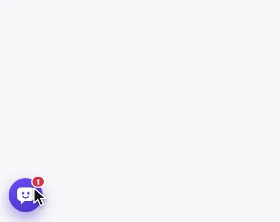
الصورة الرمزية لـ Nudge في زاوية الشاشة تحمل شارة مهمة انتهت في الخلفية، والمؤشر على وشك الضغط عليها.
النتيجة
في التجربة أضاءت الشارة على الصورة الرمزية حين انتهت مهمة في الخلفية، وفتح الضغط عليها بطاقة الإنجاز «Set delivery date of Raghad's offers to 2026-10-19 — 16 done».
ملاحظة خيار Nudge: Off في قائمة المستخدم يخفي الصورة الرمزية لك وحدك.
Odoo 17 و18 و19 · Community وEnterprise
A2الأيقونة في الشريط العلوي
أيقونة Nudge في الشريط العلوي لـ Odoo تفتح اللوحة نفسها التي تفتحها الصورة الرمزية، من أي شاشة.
الخطوات
انقر على أيقونة Nudge في الشريط العلوي.
تنفتح اللوحة على جانب الشاشة بمحادثتك الحالية.
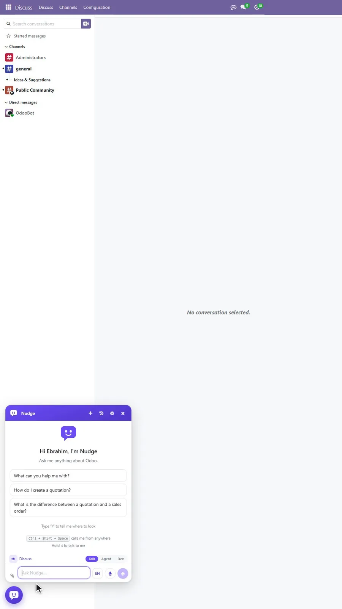
أيقونة Nudge في الشريط العلوي لـ Odoo مع اللوحة التي تفتحها (اسم الشركة والصورة الرمزية مطموسان).
النتيجة
في التجربة كان «Nudge: Off» في قائمة المستخدم؛ وبعد التشغيل فتحت الأيقونة اللوحة الفارغة بتحية «Hi Ebrahim, I'm Nudge».
Odoo 17 و18 و19 · Community وEnterprise
A3اللوحة: محادثة جديدة، السجل، التفضيلات، إيقاف
في رأس اللوحة: علامة + لمحادثة جديدة، وأيقونة الساعة لمحادثاتك السابقة (مع شارة عند وصول أخبار من الخلفية)، والترس للتفضيلات، وعلامة الإغلاق. وأثناء تدفّق الإجابة يحلّ زر Stop محل زر الإرسال.
الخطوات
اضغط + لبدء محادثة جديدة.
اضغط الساعة لإعادة فتح محادثة سابقة؛ تظهر شارة عند وجود أخبار غير مقروءة.
اضغط الترس للتفضيلات.
اضغط Stop بينما Nudge لا يزال يكتب؛ واضغط Escape لإغلاق اللوحة.
ترويسة اللوحة بأزرار محادثة جديدة والسجل والتفضيلات والإغلاق، فوق اقتراحات البداية.
النتيجة
في التجربة فُتحت اللوحة بأزرارها الأربعة (محادثة جديدة، السجل، التفضيلات، الإغلاق) قبل طرح أي سؤال.
ملاحظة تحمل المحادثة 120 رسالة، و240 إذا نفّذ Nudge فيها عملًا؛ بعد ذلك ابدأ محادثة جديدة.
Odoo 17 و18 و19 · Community وEnterprise
A4الاختصار Ctrl + Shift + Space
اختصار واحد يستدعي Nudge من أي شاشة؛ وإذا ضغطته مطوّلًا يسمعك. ويمكنك تغييره من التفضيلات.
اكتب السؤال واضغط Enter؛ Shift + Enter لسطر جديد.
لتغيير المفاتيح: أيقونة الترس ‣ الاختصارات.
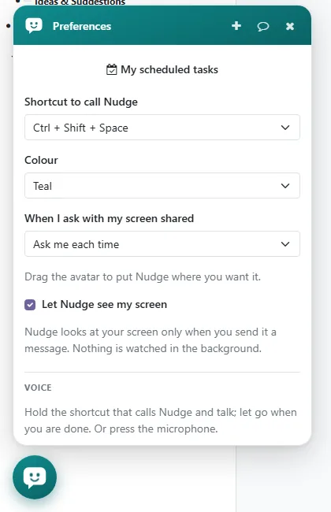
التفضيلات: «Shortcut to call Nudge: Ctrl + Shift + Space» مع إعدادات اللون ومشاركة الشاشة والصوت.
Odoo 17 و18 و19 · Community وEnterprise
A5اضغط مطوّلًا وتكلّم
اضغط الاختصار مطوّلًا واسأل، أو اضغط الميكروفون في اللوحة: تظهر عبارة “I'm listening…” ويتوقف التسجيل عندما تتوقف عن الكلام.
الخطوات
اضغط Ctrl + Shift + Space مطوّلًا، واسأل “What's the total of this quotation?”، ثم ارفع يدك.
أو اضغط زر الميكروفون؛ يتوقف وحده عندما تصمت.
في المرة الأولى اسمح للمتصفح باستخدام الميكروفون عندما يسألك.
تسجيل التجربة · 53 ثانية
النتيجة
في التجربة سُمع السؤال المنطوق “What's the total of this quotation?” كلمةً كلمة. وأجاب Nudge عن عرض السعر المفتوح S00078: لم تكن للسطرين على الشاشة كميات ولا أسعار بعد، فبيّن أين يظهر المجموع بعد تعبئة Quantity وUnit Price.
ملاحظة تحوّل Chrome وEdge وSafari الكلام إلى نص بنفسها؛ وتستعين المتصفحات الأخرى بمزوّد الذكاء الاصطناعي (Gemini يسمع؛ Groq وOpenAI عبر Whisper؛ أما Claude وOllama وOpenRouter فلا). التسجيل المرسل إلى المزوّد لا يتجاوز 60 ثانية. ويستطيع المدير إيقاف Voice للجميع.
Odoo 17 و18 و19 · Community وEnterprise
A6لغة الكلام: ع / EN، والاثنتان في جملة واحدة
الزر المجاور للميكروفون يبيّن اللغة التي تتكلمها. والجملة العربية التي تتخللها مصطلحات Odoo بالإنجليزية تُفهم جملةً واحدة.
الخطوات
اضغط ع أو EN بجانب الميكروفون لتبديل لغة الكلام؛ أو اضبطها من التفضيلات.
قل مثلًا: “Nudge, شو الـ total تبع هالـ quotation؟”.
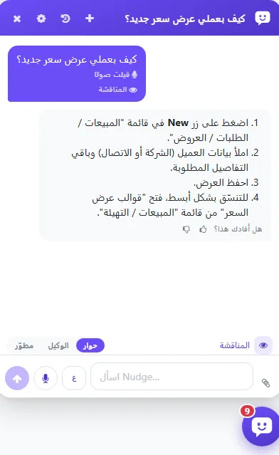
سؤال منطوق يمزج العربية والإنجليزية («Nudge، شو الـ total تبع هالـ quotation؟») مع زر اللغة «ع» وخيار «كيف تريدها؟».
النتيجة
في التجربة سُمعت الجملة المختلطة “Nudge, شو الـ total تبع هالـ quotation؟” والكلمات الإنجليزية فيها بالحروف اللاتينية. وأجاب Nudge بالعربية عن عرض السعر S00078 للعميلة Raghad Damascus، وأشار إلى Total تحت جدول Order Lines، وعرض قراءة الرقم بدقة في وضع Agent.
ملاحظة يسمع المتصفح لغة واحدة في المرة: الكلمات الإنجليزية داخل جملة عربية تخرج بحروف عربية؛ أما مزوّد الذكاء الاصطناعي فيكتبها بالحروف اللاتينية.
Odoo 17 و18 و19 · Community وEnterprise
A7الإملاء في أي حقل من حقول Odoo
انقر داخل حقل نصي، واضغط Ctrl + Alt + D وتكلّم: تُكتب الكلمات حيث يقف مؤشرك، وتعرض فقاعة صغيرة النص لحظةً بلحظة، وعلامة الصح تنهي الإملاء.
الخطوات
انقر داخل حقل نصي في Odoo، مثل Job Position في جهة اتصال.
اضغط Ctrl + Alt + D وتكلّم؛ أو اضغطه مطوّلًا أثناء الكلام.
اضغطه مرة أخرى، أو علامة ✓ في الفقاعة، عندما تنتهي.
احفظ السجل كالمعتاد.
تسجيل التجربة · 53 ثانية
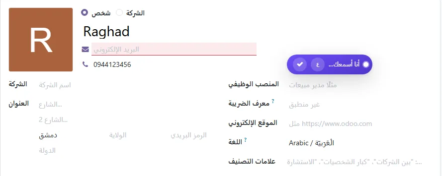
Ctrl+Alt+D على حقل المسمى الوظيفي: شارة «I'm listening…» الحية مع علامة الصح، قبل أن تستقر الكلمات في الحقل.
النتيجة
في التجربة، كتب الإملاء في حقل Job Position لجهة اتصال “Purchasing Manager” تمامًا كما نُطقت.
ملاحظة لا تُملى التواريخ ولا المبالغ ولا الحقول التي تختار فيها سجلًا. ولا يُحفظ شيء حتى تحفظ أنت.
Odoo 17 و18 و19 · Community وEnterprise
A8“اكتب في الحقل…”
قل لـ Nudge ماذا يكتب وفي أي حقل من النموذج المعروض على شاشتك، فيكتبه هناك دون حفظ لتراجعه أنت.
الخطوات
افتح النموذج وشارك الشاشة (العين مفتوحة).
اكتب: “اكتب في الملاحظات: اتصل العميل هذا الصباح” أو “Write Purchasing Manager in the Job Position field”.
راجع الحقل ثم احفظ.
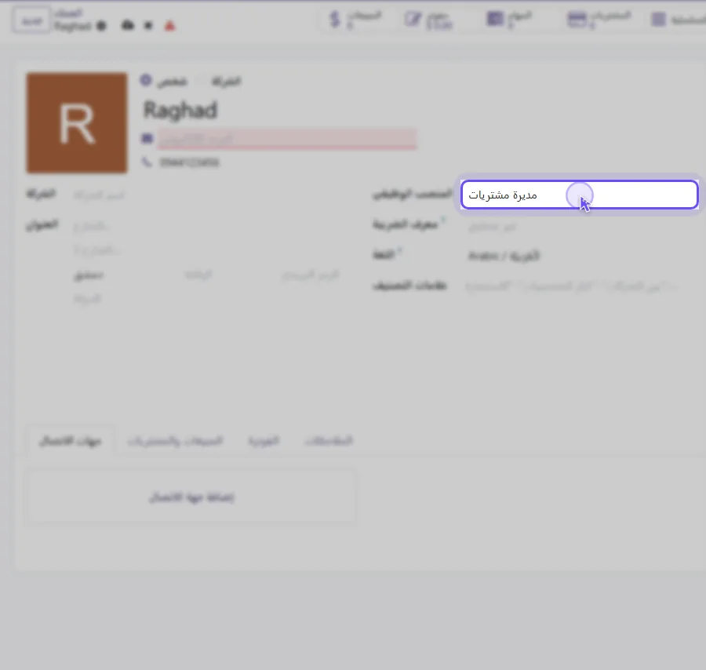
«اكتب Purchasing Manager في حقل المسمى الوظيفي»: القيمة مكتوبة في الحقل على نموذج جهة الاتصال Raghad.
النتيجة
التجربة الوحيدة المسجّلة جرت على نموذج محلي صغير (qwen3:4b عبر Ollama): عندما طُلب منه “Write Purchasing Manager in the Job Position field” أجاب بخطوات الكتابة بدلًا من أن يكتب. ولا توجد تجربة مسجّلة على نموذج أكبر.
ملاحظة يعمل في وضع Talk؛ ويبقى الحقل بقيمته غير محفوظة حتى تحفظ.
Odoo 17 و18 و19 · Community وEnterprise
A9قراءة الإجابات بصوت
فعّل “اقرأ لي الإجابات” في التفضيلات فيقرأ Nudge كل إجابة بصوت من جهازك؛ ومكبّر الصوت في رأس اللوحة يوقف القراءة.
الخطوات
أيقونة الترس ‣ فعّل “اقرأ لي الإجابات”.
اسأل أي شيء؛ تُقرأ الإجابة فور وصولها.
اضغط مكبّر الصوت في رأس اللوحة للإيقاف.
ملاحظة مطفأة ما لم تفعّلها. وبدون صوت عربي على الجهاز تُكتب الإجابات العربية فقط؛ يتيح Windows صوتًا من Settings ‣ Time & language ‣ Speech.
Odoo 17 و18 و19 · Community وEnterprise
A10الألوان
اختر لون Nudge من التفضيلات: violet أو teal أو amber أو rose أو slate.
الخطوات
أيقونة الترس ‣ اللون.
انقر على لون؛ تأخذه الصورة الرمزية واللوحة والمؤشّر فورًا.
لوحة التفضيلات بالسمة الزرقاء المخضرّة مع محدد «Colour».
ملاحظة الوضع الداكن يتبع Odoo ولا يوجد إلا في Enterprise.
Odoo 17 و18 و19 · Community وEnterprise
A11العربية والإنجليزية، واللهجات والعربيزي
يجيب Nudge باللغة التي تكتب بها أيًّا كانت لغة شاشتك: عربية فصحى، أو لهجة شامية أو مصرية أو خليجية، أو عربيزي، أو إنجليزية.
الخطوات
اكتب كما تتكلم: “شو هي هالشاشة وشو لازم أعمل هون؟”
أو بالإنجليزية: “What am I looking at, and what should I do next?”
تأتي الإجابة باللغة نفسها.
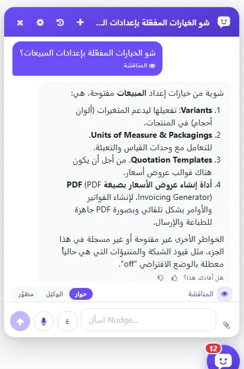
سؤال بالعربية عن إعدادات المبيعات أُجيب عنه بالعربية، في واجهة Odoo العربية.
النتيجة
في التجربة العربية جاء جواب “/كم عرض سعر عند كل بائع؟” هكذا: “Marc Demo: 17 عرض سعر — Mitchell Admin: 12 عرض سعر”، وفُهمت أسئلة اللهجة في الجولة كلها (“خدني على فواتير الموردين”، “شيّكلي هالملف قبل ما استورده”) وأُجيبت بالعربية.
ملاحظة ترتكب النماذج الصغيرة المجانية أخطاءً لغوية، في العربية خصوصًا؛ والنموذج الأقوى يجيب أفضل.
Odoo 17 و18 و19 · Community وEnterprise
A12العين: مشاركة الشاشة أو حجبها
العين فوق صندوق الرسالة تبيّن هل يرى Nudge شاشتك: السجل وحقوله وما كتبته ولم تحفظه وأزراره وتبويباته. وإذا أُغلقت لا يرى شيئًا. وشارة “seen” على رسالتك تعني أن الشاشة أُرسلت معها.
الخطوات
انقر العين لإغلاقها قبل سؤال لا تريد أن تُرسل معه الشاشة.
انقرها مرة أخرى للمشاركة؛ ويُحفظ اختيارك.
ابحث عن شارة “seen” تحت رسالتك لتعرف أن Nudge رأى الشاشة.
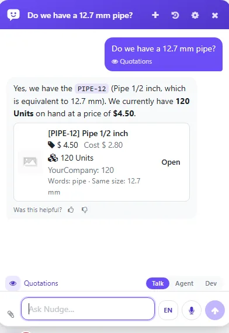
شارة «شوهد» (👁 Quotations) تحت السؤال وزر العين أسفل اللوحة: رأى Nudge قائمة عروض الأسعار حين سُئل.
النتيجة
في التجربة، والعين مفعّلة، أُجيب عن «Do we have a 12.7 mm pipe?» من الكتالوج الذي على الشاشة: «Yes, we have the PIPE-12 (Pipe 1/2 inch, which is equivalent to 12.7 mm). We currently have 120 Units on hand at a price of $4.50.»
ملاحظة تُقرأ الشاشة فقط عند إرسال رسالة. ويستطيع المدير إيقاف Screen Sharing للجميع (Settings ‣ Nudge ‣ Privacy). والقيم التي يوحي اسم حقلها بسرّ تخرج على هيئة [hidden].
Odoo 17 و18 و19 · Community وEnterprise
A13صور وملفات مع السؤال
مشبك الورق يأخذ PDF أو XLSX أو CSV أو ملفًا نصيًا أو صورة. يُقرأ نص الـ PDF أو الورقة على الخادم؛ وتُعرض الصورة على مزوّد يستطيع رؤية الصور.
الخطوات
اضغط مشبك الورق بجانب صندوق الرسالة واختر الملف.
اسأل: “Do we have this?” مع صورة منتج، أو “ماذا يقول هذا الملف عن العمل الإضافي؟” مع PDF.
أرسل؛ يُقرأ الملف كبيانات لا كتعليمات.
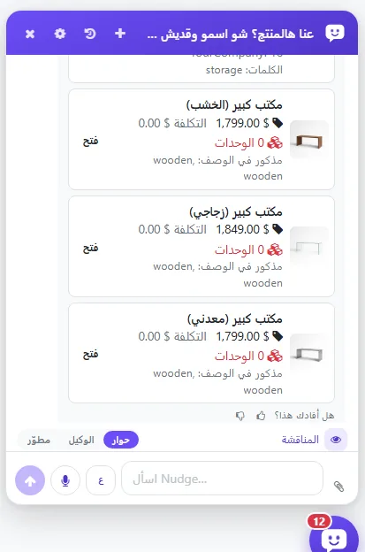
صورة مرفقة بالمشبك والمنتجات التي طابقها Nudge معها، كبطاقات.
النتيجة
في التجربة، أجابت صورة خزانة مع السؤال “Do we have this?”: “Yes, we do have a matching product: Cabinet with Doors (E-COM11) priced at $140.00 with 33 units on hand, and we also have Large Cabinet (E-COM07) priced at $320.00 with 500 units on hand.”
ملاحظة 10 MB لكل ملف. والـ PDF الممسوح ضوئيًا لا نص فيه: يقول Nudge ذلك ويطلب صورة. والنموذج الذي لا يرى الصور يقول ذلك فورًا؛ في تجربة Ollama: “qwen3:4b-instruct-nudge cannot read pictures. Describe it in words, or ask your administrator for a model that sees them.”
Odoo 17 و18 و19 · Community وEnterprise
A14Nudge: On / Off لكل مستخدم
في قائمة المستخدم خيار Nudge: On. اضغطه فتختفي لك الصورة الرمزية وأيقونة الشريط العلوي والاختصارات في كل الصفحات، حتى تضغط Nudge: Off هناك.
الخطوات
انقر على اسمك أعلى الشاشة.
اضغط Nudge: On لإيقافه لنفسك.
اضغط Nudge: Off في المكان نفسه لإعادته.
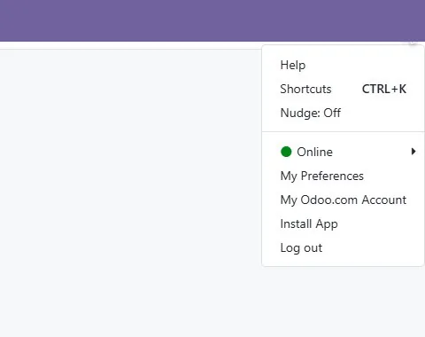
قائمة المستخدم مع خيار «Nudge: Off» الذي يشغّل Nudge أو يوقفه لهذا المستخدم.
النتيجة
في التجربة، أظهر الضغط على «Nudge: Off» في قائمة المستخدم الصورة الرمزية وفتح اللوحة.
ملاحظة لا يتأثر غيرك ولا يضيع شيء.
Odoo 17 و18 و19 · Community وEnterprise
A15البحث قبل وجود أي مزوّد ذكاء اصطناعي
إلى أن يضبط المدير مزوّدًا، تعرض اللوحة بحثًا: بضع كلمات تُظهر الشاشات التي تستطيع فتحها وإعدادات تطبيقاتك (للمديرين) والمنتجات وصفحات توثيق Odoo الرسمي. لا يُسأل ذكاء اصطناعي ولا يخرج شيء من قاعدة البيانات.
الخطوات
افتح اللوحة واكتب “warehouses”.
انقر على شاشة فيأخذك المؤشّر إليها، أو اضغط Open.
اكتب “/product chair” أو “/doc landed costs” للمنتجات أو التوثيق.
كلمة بعد شرطة مائلة تقول لـ Nudge أين يبحث. بدون أي ذكاء اصطناعي وبدون توكنز: /help /screen /setting /doc /file /find /product /stock /rules /sql. ومع الذكاء الاصطناعي بأدوات قليلة وتعليمات قصيرة فقط: /count و/explain. ولكل أمر توأم عربي (/مساعدة /شاشة /إعداد /توثيق /ملف /سجل /منتج /مخزون /قواعد /كم /اشرح).
“/كم عرض سعر عند كل بائع؟” (لمستخدمي Agent)، “/اشرح شو يعني قائمة الأسعار”.
“/مساعدة” يعرضها كلها مع مثال لكل أمر.
تسجيل التجربة · 22 ثانية
النتيجة
في التجربة أجاب “/مساعدة” فورًا: “ابدأ رسالتك بإحدى هذه الكلمات لتخبرني أين أبحث. المعلَّمة بـ AI تسأل الذكاء الاصطناعي بأدوات قليلة فقط؛ والباقي يجيب فورًا بدون أي ذكاء اصطناعي.” وقال “/سجل zzqx” خلال 0.0 ثانية: “لا يوجد سجل يمكنك قراءته باسم «zzqx».” وأجاب “/كم عرض سعر عند كل بائع؟”: “Marc Demo: 17 عرض سعر — Mitchell Admin: 12 عرض سعر”.
ملاحظة /setting للمديرين، و/rules يحتاج وضع Developer، و/sql يحتاج مفتاح SQL ومجموعة Settings.
Odoo 17 و18 و19 · Community وEnterprise
A17اقتراحات البداية في اللوحة الفارغة
تنفتح المحادثة الجديدة ببضعة أسئلة مقترحة وتلميحات تناسب الشاشة التي أنت عليها؛ انقر على أحدها لإرساله.
الخطوات
اضغط + لمحادثة جديدة.
اقرأ الاقتراحات تحت التحية وانقر على أحدها، أو اكتب سؤالك.
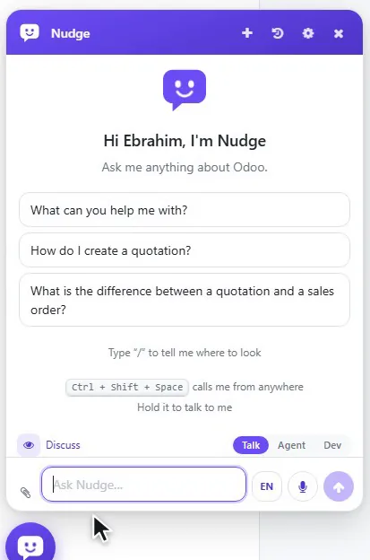
اللوحة الفارغة: «Hi Ebrahim, I'm Nudge»، ثلاثة أسئلة للبداية، وتلميح «/»، والاختصار، و«Hold it to talk to me».
النتيجة
في التجربة عرضت اللوحة الفارغة ثلاثة اقتراحات للبدء: «What can you help me with?» و«How do I create a quotation?» و«What is the difference between a quotation and a sales order?».
Odoo 17 و18 و19 · Community وEnterprise
A18إعجاب / عدم إعجاب و“ما الخطأ؟”
قيّم الإجابة بعلامتي الإعجاب تحتها. وعلامة عدم الإعجاب تفتح ملاحظة “What was wrong?”؛ وما تكتبه يصبح درسًا ينتظر اعتماد المدير.
الخطوات
اضغط علامة عدم الإعجاب تحت الإجابة.
اكتب ما كان خاطئًا، مثل “It should also say the price per metre”، وأرسل.
يعتمدها المدير أو يرفضها من Nudge ‣ What Nudge Knows ‣ Business Notes.
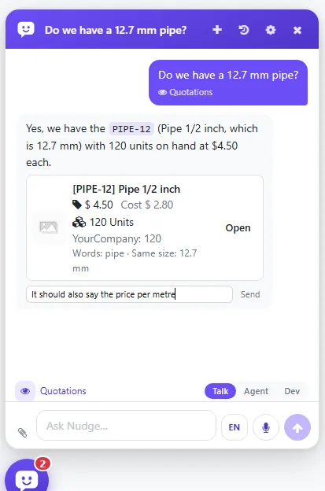
بعد عدم الإعجاب، صندوق الملاحظة «What was wrong? It becomes a lesson for a manager to approve» والملاحظة مكتوبة فيه.
النتيجة
في التجربة، بعد الإجابة عن الأنبوب 12.7 ملم، أُرسلت الملاحظة “It should also say the price per metre” من الصندوق الذي يحمل العبارة “What was wrong? It becomes a lesson for a manager to approve”؛ ثم ظهرت في قائمة Business Notes بين الدروس بحالة Proposed ومعها Approve وRefuse.
ملاحظة لا يُتعلَّم شيء بدون الاعتماد. ويرى المديرون كل التقييمات في Nudge ‣ What Nudge Knows ‣ Feedback.
Odoo 17 و18 و19 · Community وEnterprise
A19Talk / Agent / Dev، و“Nudge, نفّذها”
تحت صندوق الرسالة: Talk يشرح، وAgent ينفّذ العمل، وDev يبني (للمديرين عند تفعيله). وبعد الشرح، عبارة “Nudge, نفّذها” تنقله من الشرح إلى التنفيذ.
الخطوات
اضغط Agent تحت الرسائل ليعمل Nudge؛ واضغط Talk للعودة إلى الشرح.
أو اسأل كيف في Talk ثم اكتب “Nudge, نفّذها”.
ومع مشاركة الشاشة يسألك سؤال “كيف” أولًا: على الشاشة، أم كتابةً، أم (في Agent) نفّذها عني.
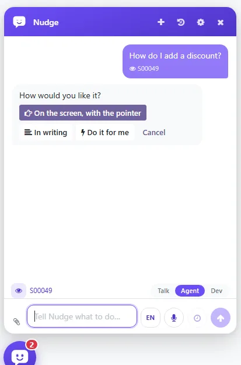
Talk / Agent / Dev أسفل اللوحة؛ وفي وضع Agent تضيف بطاقة الاختيار «Do it for me».
النتيجة
في التجربة، عندما سُئل في وضع Talk “How many quotations does Raghad have?” أجاب Nudge: “1. Open Agent mode using the button under the message box so I can look up the records for you. 2. Once in Agent mode, ask me again, and I will count the offers for Raghad directly from the database.” وفي وضع Agent عرضت بطاقة “How would you like it?” الخيارات On the screen, with the pointer / In writing / Do it for me؛ وفي Talk الخياران الأولان فقط.
ملاحظة يحتاج Agent إلى مجموعة Nudge / Agent User؛ ويحتاج Dev إلى Nudge for Developers (Settings ‣ Nudge) وصلاحيات المدير.
Odoo 17 و18 و19 · Community وEnterprise
B. وضع Talk
يشرح Nudge ويُري، ولا يغيّر شيئًا: يقرأ شاشتك، ويشير إلى الأزرار، ويفتح التوثيق، ويعرف قاعدة بياناتك وملفات شركتك، ويتعلّم من تصحيحاتك.
B1يقرأ الشاشة، بما فيها القيم غير المحفوظة
مع العين مفتوحة يرى Nudge السجل الذي على شاشتك: حقوله وقيمه، وما كتبته ولم تحفظه بعد، وأزراره وتبويباته. اسأله ما الذي تنظر إليه أو لماذا يفشل شيء.
الخطوات
افتح سجلًا وتأكد أن العين مفتوحة.
اسأل: “ما الذي أنظر إليه؟”، “ما الخطوة التالية؟”، “لماذا لا أستطيع الحفظ؟”
تسجيل التجربة · 22 ثانية
النتيجة
في التجربة، على نموذج جهة اتصال جديدة رفض الحفظ، أجاب السؤال “Why can't I save?”: “You cannot save because the Name field is required and currently empty. 1. Fill in the Name field with the contact's name. 2. Click Save again.”
ملاحظة تُقرأ النماذج والقوائم ولوحات kanban كاملة؛ وبقية الشاشات باسمها فقط. ولا يُقرأ إلا ما يُسمح لك برؤيته.
Odoo 17 و18 و19 · Community وEnterprise
B2“كيف تريدها؟”: على الشاشة، كتابةً، نفّذها عني
سؤال “كيف” أو “أين” مع مشاركة الشاشة يسألك أولًا كيف تريد الإجابة: على الشاشة بالمؤشّر، أم كتابةً؛ وفي وضعَي Agent وDev أيضًا: نفّذها عني.
الخطوات
اسأل “كيف أؤكد هذا الطلب؟” والعين مفتوحة.
اختر على الشاشة، أو كتابةً، أو نفّذها عني.
لكي لا تُسأل كل مرة، اضبط “عندما أسأل وشاشتي مشاركة” في التفضيلات.
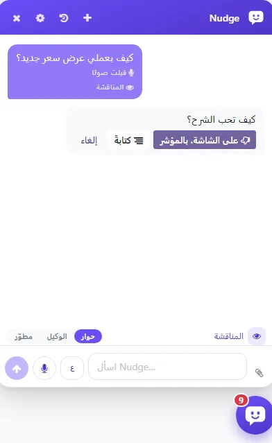
بطاقة «كيف تريدها؟»: على الشاشة بالمؤشر / كتابةً / إلغاء.
النتيجة
في التجربة عرضت البطاقة في وضع Agent الأزرار “On the screen, with the pointer” و“In writing” و“Do it for me” و“Cancel”؛ وفي وضع Talk: “On the screen, with the pointer” و“In writing” و“Cancel”.
ملاحظة الأمر المباشر (“أكّد S00003”) يذهب إلى البطاقة مباشرة؛ ولا يأتي السؤال إلا مع كيف/أين.
Odoo 17 و18 و19 · Community وEnterprise
B3جولات المؤشّر على الشاشة
على الشاشة يذهب مؤشّر Nudge، السهم ذو العينين، إلى كل زر أو حقل أو تبويب، ويضغطه على سبيل العرض، ويفتح نصًا قصيرًا بجانبه ويغبّش بقية الشاشة. وأزرار السابق والتالي و✕ موجودة دائمًا؛ ويمكن إعادة الجولة.
الخطوات
اسأل “أرني كيف أؤكد هذا الطلب” أو “أين أغيّر مندوب المبيعات؟”
اختر على الشاشة.
نفّذ كل خطوة بنفسك؛ تأتي التالية وحدها. واستعمل السابق أو التالي أو ✕.
تسجيل التجربة · 32 ثانية
النتيجة
في التجربة جرت الجولة إلى المستودعات في 3 خطوات: “1 / 3 Click on 'Inventory' in the main menu.” ثم “2 / 3 Go to 'Configuration' and then 'Warehouse Management'.” ثم “3 / 3 Click “Warehouses”.”، والمؤشّر على كل قائمة بدورها.
ملاحظة الحقل في تبويب مغلق يُصل إليه عبر التبويب أولًا. والتغبيش يحتاج إلى backdrop-filter؛ وبدونه تُعتَّم الشاشة فقط.
Odoo 17 و18 و19 · Community وEnterprise
B4جولة في مسار القوائم
اسأل كيف تفتح شاشة فيمشي المؤشّر معك عبر القوائم: التطبيقات ثم كل قائمة حتى الشاشة، من أي مكان كنت.
الخطوات
اسأل “كيف أفتح تقرير الحضور؟” أو “كيف أصل إلى المستودعات؟”
اختر على الشاشة؛ أو كتابةً لتحصل على المسار كقائمة.
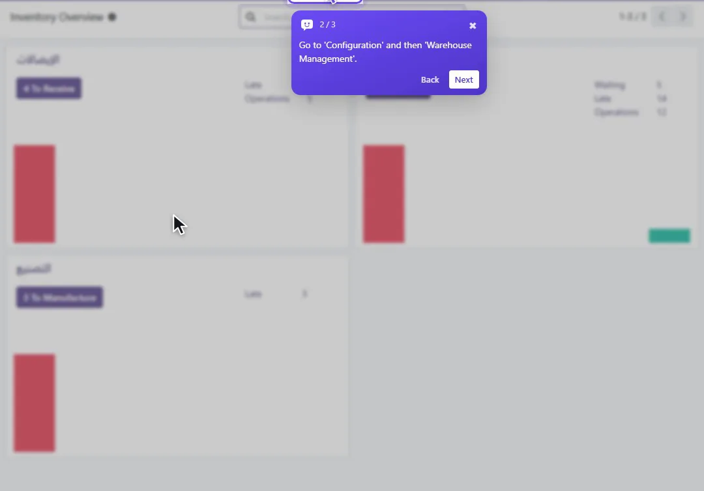
الخطوة 2/3 من جولة القوائم على نظرة المخزون العامة: «Go to Configuration and then Warehouse Management»، والمؤشر على قائمة Configuration.
النتيجة
في التجربة أعطى خيار كتابةً: “To go to the warehouses, follow these steps in your menu: 1. Click on Inventory. 2. Go to Configuration. 3. Open Warehouse Management. 4. Click on Warehouses.”؛ وعرض خيار على الشاشة المسار نفسه جولةً من 4 خطوات تبدأ بـ “Open the apps first.”
ملاحظة إن كنت في التطبيق أصلًا، تبدأ الجولة من قوائمه.
Odoo 17 و18 و19 · Community وEnterprise
B5خذني إلى هناك
“خذني إلى المستودعات” يفتح الشاشة من بين القوائم التي تستطيع فتحها (find_screen / open_screen).
الخطوات
اكتب “خذني إلى المستودعات” أو “خدني على فواتير الموردين”.
تنفتح الشاشة؛ وإن تطابقت عدة شاشات يعرضها Nudge مع المؤشّر وOpen.
تسجيل التجربة · 12 ثانية
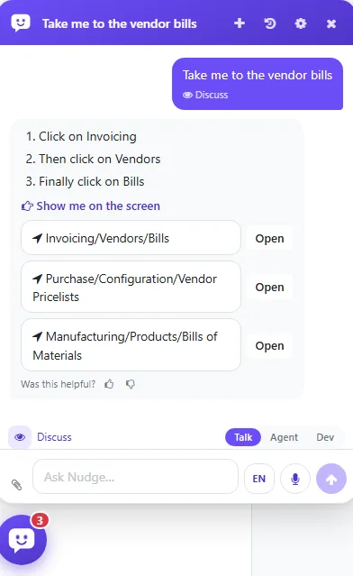
«خذني إلى فواتير المورّدين»: المسار خطوات، و«Show me on the screen»، وأزرار Open للشاشات المطابقة.
النتيجة
في التجربة أجاب “Take me to the warehouses” بـ “Taking you to the warehouses.” وفتح قائمة Warehouses وفيها مستودعا العرض التجريبي YourCompany وMy Company (San Francisco).
Odoo 17 و18 و19 · Community وEnterprise
B6شرح حقل أو مصطلح (/explain)
/explain مع اسم حقل أو مصطلح أو بلا شيء (هذه الشاشة) يجلب شرحًا قصيرًا من الذكاء الاصطناعي بأدوات قليلة وتعليمات قصيرة، بجزء صغير من توكنز السؤال الكامل.
الخطوات
على عرض سعر اكتب “/explain Payment Terms”.
أو “/اشرح شو يعني قائمة الأسعار”.
أو اسأل في رسالة عادية “شو فايدة حقل قائمة الأسعار بهالعرض؟”.
تسجيل التجربة · 22 ثانية
النتيجة
في التجربة أجاب “/explain Payment Terms” على S00098: “Payment Terms (payment_term_id) set when and how the customer has to pay the invoice for this order. Examples are “Immediate Payment”, “30 Days”, or “50% now, balance in 60 days”. On S00098 the field is empty. In that case, the invoice generated from this order uses the terms set on the customer (Raghad Damascus), if there are any…” وبيّن أين تُعرَّف (Invoicing ‣ Configuration ‣ Payment Terms).
Odoo 17 و18 و19 · Community وEnterprise
B7توثيق Odoo 19 المضمَّن
يأتي مع الموديول التوثيق الرسمي لكل تطبيق، في Community وEnterprise، وتوثيق المطوّرين: 1067 صفحة يبحث فيها Postgres. في أسئلة Odoo القياسي يقرأها Nudge قبل الإجابة ويعطي الرابط في النهاية؛ و/doc يبحث فيها بدون ذكاء اصطناعي.
الخطوات
اسأل “كيف تعمل قوالب عروض الأسعار؟” أو “ما هي قاعدة إعادة الطلب؟”
في التجربة أجاب “How do I send a quotation by email?” بثلاث خطوات (“Click the Send by Email button at the top left of the form. A composer window will open with a pre-filled email template and the PDF attached…”) وأُغلق برابط “Sales Documentation” إلى odoo.com/documentation/19.0. وأعاد “/doc landed costs” صفحة “Landed costs ▸ Add landed cost” فورًا.
ملاحظة لا يُجلب شيء من الخارج. ويُبحث في التوثيق بكلمات إنجليزية: السؤال العربي يحوّله النموذج أولًا إلى كلمات إنجليزية، وهذا يكلّف نداءً واحدًا وقد يخطئ. والتوثيق حقوقه لـ Odoo S.A. برخصة CC BY-SA 4.0.
Odoo 17 و18 و19 · Community وEnterprise
B8يعرف قاعدة البيانات هذه
يعرف Nudge كيف ضُبطت هذه القاعدة: أي الموديولات مخصصة وماذا تفعل، وأي الحقول أُضيفت، وكيف ضُبطت التطبيقات، وأين يجري العمل فعلًا: يعدّ كل يوم كم سجلًا من كل نوع وكم تغيّر مؤخرًا.
الخطوات
اسأل “ماذا يفعل موديول الصيانة عندنا؟” أو “ما الحقول التي أضفناها إلى أوامر البيع؟”
اسأل “شو في أشياء بتشتغل لحالها على عروض الأسعار؟”
وإذا غطّى موضوعًا موديولان، يجيب Nudge من الذي يستعمله موظفوكم ويقول من أين قرأ.
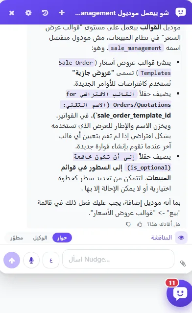
«ماذا تفعل وحدة sale_management؟» أُجيب عنه من وحدات قاعدة البيانات هذه.
النتيجة
في التجربة أجاب “What runs by itself on quotations?” من هذه القاعدة: “Automation rules: None running automatically on events. Server actions (in the Actions menu): Send an email on sale.order, Create Project on sale.order, Mark Quotation as Sent on sale.order, Share on sale.order. Scheduled actions: One scheduled action for sending pending emails…”
ملاحظة يحمل الملف البنية والإعدادات لا سجلات العمل؛ وأجزاؤه عن الصلاحيات والأتمتة تُقال للمديرين فقط. ويصحّحه المديرون من Nudge ‣ What Nudge Knows ‣ Database Profile.
Odoo 17 و18 و19 · Community وEnterprise
B9يقرأ كود الموديولات المخصصة (للمديرين)
للمدير، يستطيع Nudge قراءة كود الموديولات المخصصة المنصَّبة هنا وشرح ما تفعله.
أو بالإنجليزية “Read the code of the module nudge_spreadsheet and tell me what it does”.
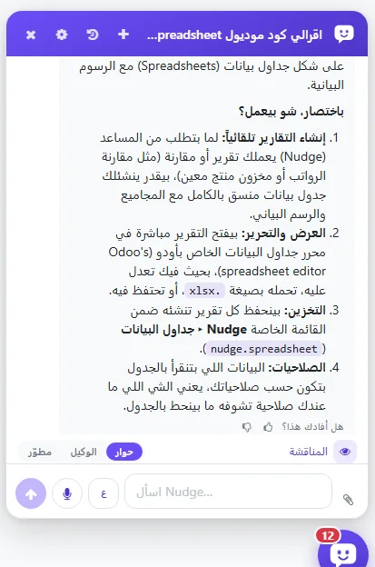
«اقرأ كود وحدة nudge_spreadsheet وقل لي ماذا تفعل» أُجيب عنه من شيفرة الوحدة المصدرية.
النتيجة
في التجربة العربية، عندما طُلب منه قراءة nudge_spreadsheet لخّصه Nudge في أربع نقاط: “إنشاء التقارير تلقائياً… جدول بيانات منسق بالكامل مع المجاميع والرسم البياني”، “بيفتح التقرير مباشرة في محرر جداول البيانات الخاص بأودو… تحمله بصيغة .xlsx”، “بينحفظ كل تقرير… ضمن القائمة Nudge ‣ جداول البيانات (nudge.spreadsheet)”، و“البيانات اللي بتنقرأ بالجدول بتكون حسب صلاحياتك”.
ملاحظة تُحجب الأسرار داخل الكود قبل إرساله. للمديرين فقط.
Odoo 17 و18 و19 · Community وEnterprise
B10ملفات الشركة
يرفع المديرون مستندات الشركة (سياسات، إجراءات) في Nudge ‣ What Nudge Knows ‣ Company Files؛ ويجيب Nudge منها مع ذكر الملف والصفحة. ويمكن حصر الملف بمجموعات.
الخطوات
اسأل “كم يوم إجازة سنوية إلنا، وكم بينحسب الإضافي يوم الجمعة؟”
أو “/ملف إجازة سنوية” للمقاطع نفسها بدون ذكاء اصطناعي.
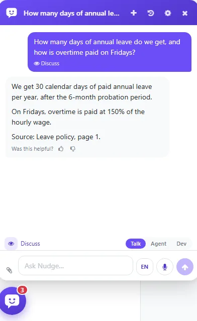
سؤال أُجيب عنه من ملف للشركة، مع اقتباس الملف والصفحة: «Source: Leave policy, page 1».
النتيجة
في التجربة (نموذج محلي qwen3:4b) أجاب السؤال: “We get 30 calendar days of paid annual leave per year, after the 6-month probation period. Overtime on Fridays is paid at 150% of the hourly wage. These rules are from the “Leave policy” file, page 1.” وعرض “/ملف إجازة سنوية” المقاطع خلال 0.1 ثانية.
ملاحظة ما في الملف يُقرأ كبيانات لا كتعليمات.
Odoo 17 و18 و19 · Community وEnterprise
B11مستشار الإعداد
اسأله كيف تضبط شيئًا لشركتك فيسألك أولًا ما يلزمه، ثم يقرأ إعدادات التطبيق وقائمة التهيئة فيه وموديولاتك المخصصة، ويقترح إعدادًا مبنيًا على ما عندك مع صفحات التوثيق. “أرني” يأخذ المؤشّر إلى كل إعداد؛ و“طبّق” يغيّرها بتأكيد لكل تغيير (للمديرين).
الخطوات
اسأل “بدي اشتغل بمستودعين وانقل بضاعة بيناتهم، كيف بضبطها؟”
أجب عن أسئلته عن شركتك.
قل “أرني” للمؤشّر، أو “طبّقها” (في Agent، للمديرين) للتغييرات.
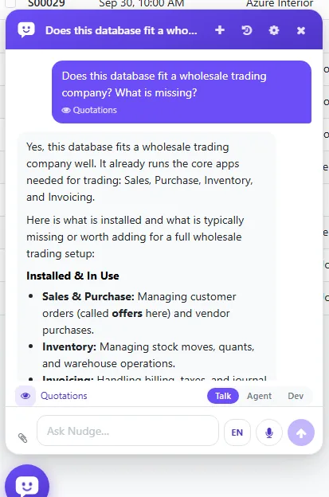
«هل تناسب قاعدة البيانات هذه شركة تجارة بالجملة؟ وما الناقص؟»: ما هو مثبَّت ومستخدم، وما يجب إضافته.
النتيجة
في التجربة (نموذج محلي qwen3:4b) أجاب سؤال المستودعين: “Great! We have warehouse management set up in this database. Here's how to set it up for two warehouses and move goods between them: 1. Go to: Inventory → Configuration → Warehouse Management → Warehouses 2. Create two warehouse records… 3. Set up stock moves between them…” مع رابط التوثيق وعرض “Would you like me to show you the exact steps on the screen…”.
ملاحظة تُقرأ قيم الإعدادات وكود الموديولات للمديرين فقط. والتطبيق يحتاج إلى Nudge for Administrators.
Odoo 17 و18 و19 · Community وEnterprise
B12تقييم قاعدة البيانات
“هل قاعدتنا مناسبة لشركة مقاولات؟” (أو تجارة أو شحن أو تصنيع أو تجزئة أو خدمات أو عقارات): يقارن Nudge ما تشغّله مثل هذه الشركة في Odoo بما هو منصّب ومستعمل ومخصّص هنا، ويقترح الناقص مع صفحة توثيق لكل بند.
الخطوات
اسأل “هالقاعدة بتناسب شركة تجارة جملة؟ شو ناقصها؟”
أو بالإنجليزية: “Does this database fit a trading company? What is missing?”
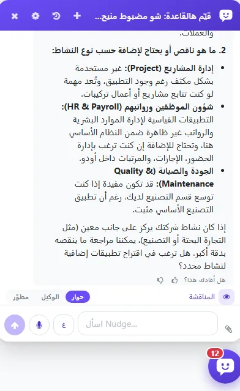
«هل قاعدة البيانات هذه مناسبة لشركة تجارية؟» مقيَّمة من التطبيقات المثبتة واستخدامها.
النتيجة
في التجربة أجاب Nudge: “Yes, this database is well-suited for a trading company as you have all the essential apps installed and actively in use: Sales (for your offers and orders), Purchase (for vendor management), Inventory (for managing stock), and Invoicing (for accounting). To further strengthen your trading operations, you might consider these modules, which are currently missing: CRM… Margins… Landed Costs…” ومع كل بند رابط توثيقه.
ملاحظة وما لا مرجع له عنده يقول إنه لا يعرفه.
Odoo 17 و18 و19 · Community وEnterprise
B13فحص الملف قبل الاستيراد
أرفق ملف Excel أو CSV فيجرّبه Nudge كما يفعل زر Test في شاشة الاستيراد دون أن يحفظ: يُفحص كل سطر، وتعود كل مشكلة مع رقم سطرها وعمودها مشروحةً ومع طريقة الإصلاح.
الخطوات
اضغط مشبك الورق وأرفق ملف .xlsx أو .csv.
اسأل “شيّكلي هالملف قبل ما استورده على جهات الاتصال” أو “ليش ما عم ينستورد؟”
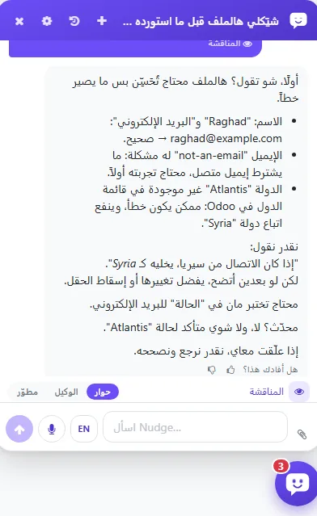
ملف CSV مفحوص قبل الاستيراد: الصف والعمود المعطوبان مسمّيان (الدولة «Atlantis» لـ Northwind Interiors) مع طريقتين للإصلاح.
النتيجة
في التجربة أجاب Nudge: “To import these customers, you need to fix the country_id for “Northwind Interiors.” The record fails because “Atlantis” does not exist in your country list. You have two options: 1. Correct the file… 2. Create the country… under Contacts > Configuration > Countries. All other rows appear valid.”
ملاحظة وعلى شاشة الاستيراد مع مشاركة الشاشة يرى Nudge الأخطاء المعروضة فيها أيضًا.
Odoo 17 و18 و19 · Community وEnterprise
B14البحث عن المنتجات
/product (أو سؤال عادي) يبحث في الأسماء والأكواد والباركود والأوصاف والمتغيرات والفئات وأسماء المورّدين للمنتجات التي تراها. يُقرأ المقاس بوحدته ويُقارن بأي وحدة (12.7 ملم يجد أنبوب نصف إنش)؛ والكلمة المكتوبة بخطأ تجد ما قُصد بها. وتعرض البطاقات الصورة والسعر والتكلفة والمخزون في كل مستودع وسبب ظهور المنتج؛ ويمكن أن تكون الصورة هي البحث.
الخطوات
اكتب “/منتج برغي 8 ملم” أو “/مخزون كرسي” (المنتجات المخزّنة مع الكمية في كل مستودع).
أو اسأل “Do we have a 12.7 mm pipe?”
أرفق صورة مع /منتج للبحث بها.
تسجيل التجربة · 36 ثانية
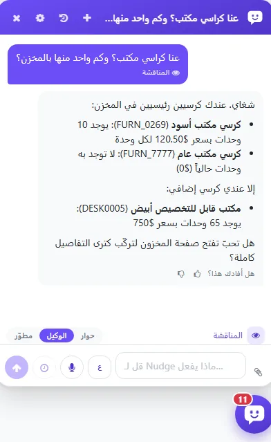
«هل عندنا أنبوب 12.7 مم؟» ← وُجد أنبوب نصف البوصة، مع المخزون والسعر، كبطاقة منتج.
النتيجة
في التجربة أجاب “Do we have a 12.7 mm pipe?”: “Yes, we have the PIPE-12 (Pipe 1/2 inch, which is equivalent to 12.7 mm). We currently have 120 Units on hand at a price of $4.50.” وأعاد “/مخزون كرسي” و“/منتج خزانة كبيرة” بطاقات بدون ذكاء اصطناعي خلال 0.3–0.4 ثانية.
ملاحظة البحث نفسه لا يحتاج ذكاءً اصطناعيًا ويعمل قبل إعداد أي مزوّد. والصور تحتاج مزوّدًا يراها.
Odoo 17 و18 و19 · Community وEnterprise
B15يتذكّر درسًا عندما تصحّحه
صحّح Nudge أو قل له أن يتذكّر شيئًا فيكتب الدرس. ويعتمده المدير أو يرفضه في Business Notes؛ وبعد الاعتماد تبدأ كل محادثة به.
الخطوات
اكتب “تذكّر: الخصم عنا ما بيتجاوز 10% على أي عرض سعر” أو “لا، نسمّي عروض الأسعار عروضًا”.
يفتح المدير Nudge ‣ What Nudge Knows ‣ Business Notes ويضغط Approve.
تسجيل التجربة · 55 ثانية
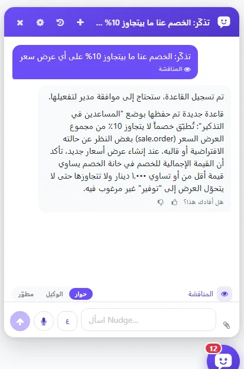
«تذكّر: خصمنا لا يتجاوز 10% على أي عرض سعر» ← يُدوَّن الدرس وينتظر موافقة مدير.
النتيجة
في التجربة العربية أجاب “تذكّر: الخصم عنا ما بيتجاوز 10% على أي عرض سعر” بـ “علمت وسجلت القاعدة…”، وظهر الدرس في Business Notes بحالة Proposed. وبعد اعتماد الملاحظة “We call quotations offers” كتب Nudge “To send an offer by email…” و“I will count the offers for Raghad” بدلًا من quotations.
ملاحظة لا يُتعلَّم شيء بدون الاعتماد؛ والدرس المكرّر يُحفظ مرة واحدة.
Odoo 17 و18 و19 · Community وEnterprise
C. وضع Agent
ينفّذ Nudge العمل باسمك وبصلاحياتك، ويسألك قبل كل تغيير: السجلات، والأزرار، والقوائم، والأرقام، والتقارير، والعمل في الخلفية، والمهام التي تعمل من تلقاء نفسها.
C1بطاقات التأكيد: نعم / لا، و⚠ على ما لا يُسترجع
قبل أي تغيير يعرض Nudge بطاقة: ما سينشئه أو يغيّره، والحقول كما هي وكما ستصبح، أو الزر الذي سيضغطه وعلى أي سجل. لا يحدث شيء قبل Yes, do it. وعلامة التحذير تعني إجراءً لا يُسترجع بنقرة.
الخطوات
في وضع Agent اكتب “Confirm Raghad's quotation S00051”.
اقرأ البطاقة: Press “Confirm”: Sales Order — S00051 ومعها ⚠.
اضغط Yes, do it أو No؛ وعند الرفض يسألك Nudge عمّا تريده.
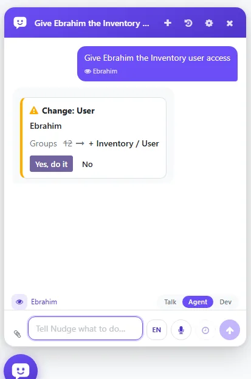
بطاقة تأكيد بعلامة ⚠ على تغيير حساس («Change: User — Groups + Inventory / User») وزرّا Yes, do it / No.
النتيجة
في التجربة كانت البطاقة “Press “Confirm”: Sales Order — S00051 — Yes, do it / No” ومعلَّمة كحسّاسة. وبعد الموافقة: “I have confirmed offer S00051 for Raghad Damascus.”؛ وصارت حالة الطلب sale.
ملاحظة كتابة رسالة جديدة بدل الإجابة تترك البطاقة بلا قرار: لا يُنفَّذ شيء. وتغيير واحد في المرة، إلا في الخطة (C9).
Odoo 17 و18 و19 · Community وEnterprise
C2إنشاء السجلات
اطلب سجلًا بالكلام؛ يجد Nudge العميل والمنتجات وبقية ما يلزم، ويعرض ما سينشئه، وينشئه بموافقتك وباسمك.
الخطوات
اضغط Agent.
اكتب “Create a sales order for Raghad with 2 office chairs” أو “اعمل جهة اتصال اسمها Raghad، رقمها 0944123456 ومدينتها دمشق”.
اقرأ البطاقة واضغط Yes, do it.
تسجيل التجربة · 32 ثانية
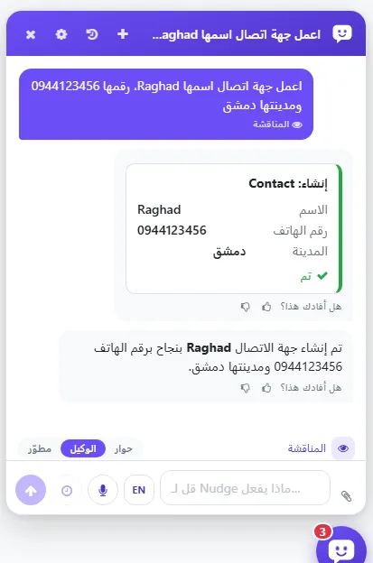
«أنشئ أمر بيع لـ Raghad بكرسيّي مكتب»: بطاقة الإنجاز والإجابة التي تسمّي العرض الجديد.
النتيجة
في التجربة عرض “Create a sales order for Raghad with 2 office chairs” البطاقة “Create: Sales Order”؛ وبعد الموافقة كتب Nudge: “I have created offer S00050 for Raghad with 2 office chairs. Here it is on your screen.” وكان S00050 موجودًا بحالة draft، العميلة Raghad، سطر واحد، والمجموع 140.
ملاحظة يُسجَّل أن السجل أنشأته أنت. والعميل الذي لا يجده Nudge قد يعرض إنشاءه.
Odoo 17 و18 و19 · Community وEnterprise
C3تعديل السجلات
اطلب تغييرًا فتعرض البطاقة الحقل كما هو وكما سيصبح. نعم تكتبه باسمك؛ ولا تترك كل شيء كما كان.
الخطوات
اكتب “غيّرلي مدينة Raghad لحلب” أو “حط المرجع PO-7788 على هذا العرض”.
اقرأ البطاقة Change: Contact وأجب بنعم أو لا.
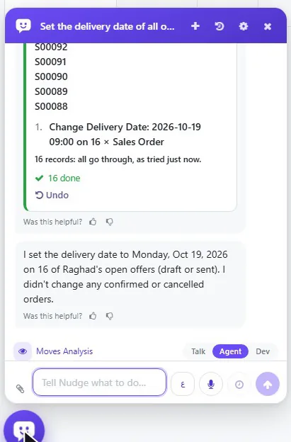
تاريخ التسليم تغيّر على 16 عرض سعر: بطاقة الإنجاز مع «16 done» وUndo، والإجابة.
النتيجة
في التجربة عرض “Change the city of Ebrahim to Aleppo” البطاقة “Change: Contact”. ضغط المجرّب No؛ فأجاب Nudge: “It looks like the change was cancelled. Let me know if you would still like to update the city to Aleppo or if you need anything else!” وبقيت جهة الاتصال كما هي.
ملاحظة Undo على البطاقة المنفَّذة يُرجع القيمة القديمة (C10).
Odoo 17 و18 و19 · Community وEnterprise
C4ضغط الأزرار باسم المستخدم
تأكيد، اعتماد، ترحيل، إرسال: يضغط Nudge زر النموذج باسمك بعد البطاقة. والزر الذي لا تملكه على النموذج لا يمكن ضغطه.
الخطوات
اكتب “Confirm Raghad's quotation S00077” أو “أكّدلي عرض السعر S00002”.
تسمّي البطاقة الزر والسجل؛ اضغط Yes, do it.
تسجيل التجربة · 21 ثانية
النتيجة
في التجربة، بعد الموافقة على “Press “Confirm”: Sales Order — S00077”، كتب Nudge: “I have confirmed the offer S00077 for Raghad Damascus. It is now a sales order.” وفي الجولة العربية انتهى “أكّدلي عرض السعر S00002” بـ “تم تأكيد عرض السعر S00002 بنجاح وأصبح الآن أمر بيع.”
ملاحظة ما فعله الزر لا يُسترجع بـ Undo؛ وتقول البطاقة ذلك قبل أن تقرر. والنافذة التي يفتحها زر تُفتح على شاشتك لتكمل أنت.
Odoo 17 و18 و19 · Community وEnterprise
C5إيجاد أي سجل بالاسم الذي تعرفه به
تبحث find_record عن السجل باسمه أو رقمه أو مرجعه في أي تطبيق، مع نوعه أولًا لتضييق البحث؛ و/find يفعل الشيء نفسه بدون ذكاء اصطناعي.
الخطوات
اكتب “/سجل S00004” أو “/سجل جهة اتصال: Azure”.
أو سمّه ببساطة في وضع Agent: “Confirm Raghad's quotation S00051”.
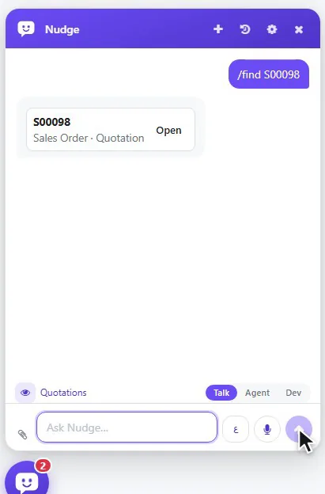
«/find S00098» ← السجل الموجود كبطاقة بنموذجه وحالته وزر Open.
النتيجة
في التجربة عرض “/سجل S00004” و“/سجل جهة اتصال: Azure” السجلات خلال 0.1–0.6 ثانية بدون ذكاء اصطناعي ومع كل منها Open؛ وقال “/سجل zzqx”: “لا يوجد سجل يمكنك قراءته باسم «zzqx».”
ملاحظة السجل الذي لا تستطيع فتحه لا يُعثر عليه.
Odoo 17 و18 و19 · Community وEnterprise
C6البحث في السجلات وقراءتها
يبحث Nudge في السجلات ويقرأها عبر ORM بصلاحياتك قبل أن يجيب أو يعمل: يتحقق من حالة السجل قبل ضغط زر، ويقرأ ما يحتاجه السؤال.
الخطوات
اسأل “أي عروضي ما زالت تنتظر؟” أو “طلعلي العروض اللي ما إلها بائع واكتبلي أسماء زباينها”.
أو أعطِ أمرًا؛ يقرأ Nudge السجل أولًا.
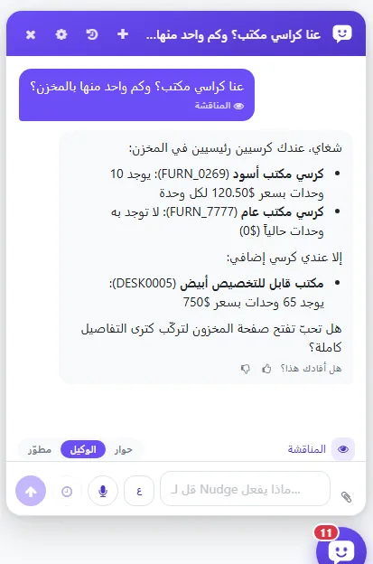
«هل عندنا كراسي مكتب، وكم في المخزون؟» ← جدول بالمنتجات مع المخزون والسعر.
النتيجة
في التجربة، عندما طُلب “Confirm the quotation S00003” وكان مؤكّدًا من قبل، قرأه Nudge وأجاب دون أن يضغط شيئًا: “The offer S00003 is already confirmed (its state is “Sales Order”).”
ملاحظة تُحجب الحقول التي تحمل أسرارًا، وتُغلق النماذج التي تحمل طريقة عمل Odoo نفسه، أيًّا كانت الصلاحيات.
Odoo 17 و18 و19 · Community وEnterprise
C7تصفية القائمة المعروضة وتجميعها
تطبّق filter_screen عوامل التصفية والتجميع على القائمة التي تنظر إليها، كما يفعل شريط البحث.
الخطوات
على قائمة عروض الأسعار اكتب “Show Raghad's quotations grouped by status” أو “فلترلي العروض تبع Gemini Furniture بس”.
تظهر عوامل التصفية في شريط البحث؛ وتُزال كالمعتاد.
تسجيل التجربة · 14 ثانية
النتيجة
في التجربة أجاب “Show Raghad's quotations grouped by status”: “Showing Raghad's offers grouped by status on your screen.”؛ وحمل شريط البحث My Quotations وCustomer contains Raghad وStatus، وكانت المجموعات Quotation (3) $ 1,020.40 وQuotation Sent (0) وSales Order (2) $ 3,728.00 وCancelled (0).
Odoo 17 و18 و19 · Community وEnterprise
C8فتح سجل
يفتح Nudge على شاشتك السجل الذي أنشأه أو وجده، أو أي سجل تسمّيه.
الخطوات
اكتب “افتح S00050” أو “افتح جهة اتصال Raghad”.
وبعد الإنشاء يكون السجل الجديد على شاشتك.
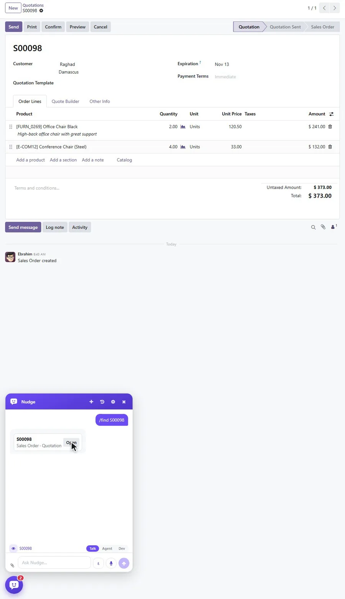
السجل مفتوح من زر Open في البطاقة: عرض السعر S00098 على الشاشة واللوحة ما تزال تعرض نتيجة البحث.
النتيجة
في التجربة فُتح أمر البيع المنشأ لـ Raghad فورًا: “I have created offer S00050 for Raghad with 2 office chairs. Here it is on your screen.”
Odoo 17 و18 و19 · Community وEnterprise
C9سجلات كثيرة بموافقة واحدة
“Set the salesperson of all of Raghad's quotations to Ebrahim”: خطة واحدة وبطاقة واحدة لا بطاقة لكل سجل. يجرّب Nudge الخطة ويتراجع عنها أولًا، فتقول البطاقة كم سجلًا سينجح ولماذا لن ينجح الباقي. نعم كلها / فقط التي تنجح / لا.
الخطوات
اكتب التغيير لمجموعة من السجلات: “Set the delivery date of all of Raghad's quotations to next Monday”.
اقرأ البطاقة: السجلات، والتغيير، و“N records: all go through, as tried just now”.
اضغط Yes, all of them أو Only the … that go through أو No.
تسجيل التجربة · 28 ثانية
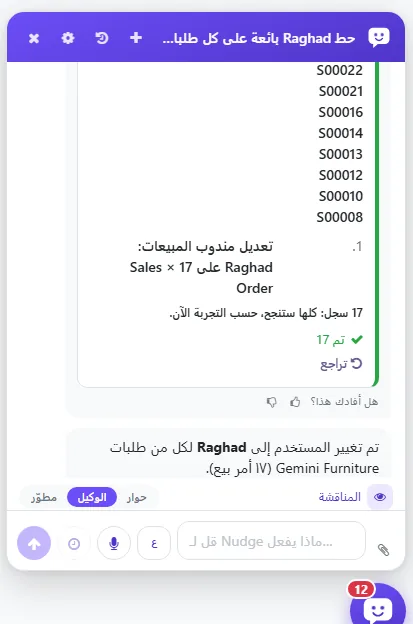
خطة على سجلات كثيرة: قائمة العروض، والتغيير الواحد، و«17 records: all go through, as tried just now»، و«Yes, all of them».
النتيجة
في التجربة كانت البطاقة: “Change Salesperson: Ebrahim on 17 × Sales Order — 17 records: all go through, as tried just now. — Yes, all of them / No”. وبعد الموافقة: “I have updated the salesperson to Ebrahim for all 17 of Raghad's offers.”، وصار على S00033…S00049 كلها Ebrahim.
ملاحظة كل سجل يُنفَّذ في savepoint خاص به: فشل واحد لا يوقف الباقي. وما يزيد على 20 سجلًا يُنفَّذ في الخلفية. وRecords per Plan: 200 افتراضيًا و1000 على الأكثر (Settings ‣ Nudge).
Odoo 17 و18 و19 · Community وEnterprise
C10Undo على البطاقات المنفَّذة
Undo على البطاقة المنفَّذة يُرجع ما كتبه التغيير سجلًا سجلًا؛ والسجل الذي غيّره أحد بعد ذلك يُترك كما هو. وما فعله زر لا يُسترجع، وتقول البطاقة ذلك مسبقًا.
الخطوات
افتح المحادثة التي فيها البطاقة المنفَّذة.
اضغط Undo عليها.
تسجيل التجربة · 28 ثانية
النتيجة
في التجربة أعاد Undo على تغيير مندوب المبيعات لـ 17 سجلًا الاسم Marc Demo إلى الطلبات الـ 17 كلها (S00033…S00049) وظهرت البطاقة بحالة undone. وعرض تغيير تاريخ التسليم لـ 16 سجلًا المنفَّذ في الخلفية زر Undo أيضًا.
Odoo 17 و18 و19 · Community وEnterprise
C11العدّ والمجاميع
كم عددًا، كم مبلغًا، أيها الأكثر، بحسب ماذا: يعدّ aggregate ويجمع ويحسب المتوسط والأدنى والأعلى مجمَّعة بأي حقل، والتاريخ باليوم أو الأسبوع أو الشهر أو الربع أو السنة. عبر ORM وباسمك: ما لا تستطيع فتحه لا يُعدّ. و/count يطلب رقمًا واحدًا بتعليمات قصيرة.
الخطوات
في وضع Agent اسأل “كم عرض سعر لكل مندوب هذا الشهر؟” أو “مجموع الفواتير لكل عميل هذه السنة، أكبر عشرة”.
أو اكتب “/كم عرض سعر عند كل بائع؟”.
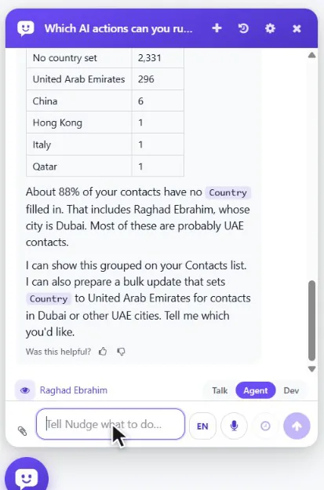
عدّ بحسب المجموعة أُجيب عنه كجدول: جهات الاتصال لكل دولة، مع الإجمالي.
النتيجة
في التجربة أجاب “/كم عرض سعر عند كل بائع؟”: “Marc Demo: 17 عرض سعر — Mitchell Admin: 12 عرض سعر — تم حساب عدد عروض الأسعار (أمر البيع) مجمعة حسب مندوب المبيعات.” خلال 6.6 ثانية.
Odoo 17 و18 و19 · Community وEnterprise
C12تقرير في المحادثة أو جدول بيانات مع رسم بياني
اطلب مقارنة أو تقريرًا فيسألك Nudge: في المحادثة أم جدول بيانات مع رسم بياني. ومع Nudge: Spreadsheets يبني جدولًا منسّقًا بمجاميع ورسم بياني في محرّر جداول Odoo، لك أن تغيّره وتنزّله بصيغة .xlsx، ويبقى تحت Nudge ‣ Spreadsheets. وعلى Enterprise مع Documents يُحفظ في Documents.
الخطوات
اسأل “قارنلي مبيعات هالشهر مع الشهر الماضي” أو “مخزون المادة X في كل مستودع”.
اختر في المحادثة أو جدول بيانات مع رسم بياني.
تسجيل التجربة · 22 ثانية
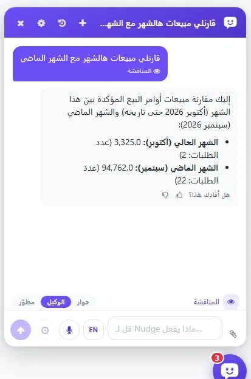
«قارن مبيعات هذا الشهر بحسب مندوب المبيعات» كجدول بيانات مع رسم بياني (nudge_spreadsheet).
النتيجة
في التجربة أجابت المقارنة في المحادثة: “سبتمبر 2026: عدد العروض/الطلبات المؤكدة: 23، إجمالي المبيعات: $95,139.50 — أكتوبر 2026 (حتى الآن): لم يتم تسجيل أي مبيعات أو عروض مؤكدة لهذا الشهر حتى تاريخ اليوم (8 أكتوبر).” وفتح خيار الجدول لـ “مبيعات هذا الشهر بحسب المندوب” جدول Nudge برسم بياني في محرّر Odoo (رسم واحد، لوحتان).
ملاحظة لا يأتي السؤال إلا للمقارنات والتقارير، وفقط عندما يكون موديول Spreadsheet منصّبًا. وNudge: Spreadsheets in Documents لنسخة Enterprise فقط.
Odoo 17 و18 و19 · Community وEnterprise
C13Python (معزول، للقراءة فقط، مطفأ افتراضيًا)
عندما يفعّل المدير Python for the Agent، يحسب Nudge ما لا يعطيه العدّ: حسابًا لكل سجل، مقارنة بين قائمتين، تواريخ. يعمل الكود في sandbox إجراءات الخادم في Odoo باسمك، داخل savepoint يُلغى في النهاية، بمهلة 10 ثوانٍ؛ وما يكتبه يُهمل، ويبقى أي تغيير يمرّ بموافقتك.
الخطوات
المدير: Settings ‣ Nudge ‣ Python for the Agent.
في وضع Agent اسأل “أي عروض الأسعار هامشها أقل من 10%؟” أو “قارن القائمتين وقل لي ما الناقص”.
ملاحظة لا import ولا sudo ولا cursor ولا خاصية خاصة ولا نماذج النظام؛ وكل تشغيل مسجَّل. المهلة 10 ثوانٍ.
Odoo 17 و18 و19 · Community وEnterprise
C14SQL (استعلام SELECT واحد، للمديرين، بمفتاح)
يستطيع مديرو مجموعة Settings، عندما يُفعَّل SQL for Administrators، طلب استعلام SELECT واحد: ربط جداول أو تقرير لا تعطيه أداة أخرى. للقراءة فقط بفرض من قاعدة البيانات نفسها (المعاملة تُضبط read-only)؛ 50 صفًا، 10 ثوانٍ، داخل savepoint يُلغى في النهاية. و/sql ينفّذ استعلامًا تكتبه أنت بدون ذكاء اصطناعي.
الخطوات
المدير: Settings ‣ Nudge ‣ SQL for Administrators.
اسأل “بالـ SQL: أكتر 5 زباين عندهم طلبات”.
أو اكتب “/sql SELECT name, city FROM res_partner WHERE city IS NOT NULL ORDER BY name LIMIT 5”.
في التجربة أجاب “بالـ SQL: أكتر 5 زباين عندهم طلبات”: “1. Gemini Furniture: 17 طلب 2. Acme Corporation: 5 طلبات 3. Ready Mat: طلبان 4. Joel Willis: طلبان 5. Azure Interior: طلب واحد”. ونُفِّذ استعلام /sql أعلاه فورًا (0.0 ثانية) بدون ذكاء اصطناعي.
ملاحظة لا جداول المستخدمين ولا المعاملات ولا المزوّدين أبدًا؛ وتُحجب الأسرار بالعمود وبالقيمة؛ وكل استعلام مسجَّل.
Odoo 17 و18 و19 · Community وEnterprise
C15إعداد Odoo للمديرين
مع تفعيل Nudge for Administrators يسأل المديرون الوكيل عن المستخدمين والمجموعات والصلاحيات وقواعد السجلات والشركات والقوائم والعروض والإجراءات ومعاملات النظام، ويغيّرونها بتأكيد لكل تغيير؛ وتبدّل change_settings إعداد تطبيق من البطاقة.
الخطوات
المدير: Settings ‣ Nudge ‣ Nudge for Administrators.
اطلب “Turn on Discounts” أو “اعطي Marc Demo صلاحية مستخدم بالمخزون”.
اقرأ البطاقة (⚠ على تغييرات الصلاحيات) وأجب.
تسجيل التجربة · 18 ثانية
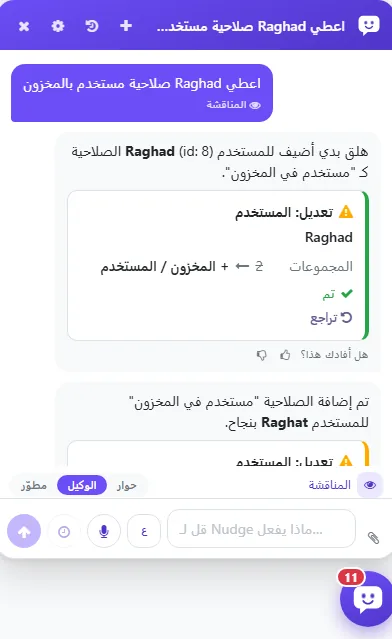
«أعطِ Ebrahim صلاحية مستخدم المخزون» ← بطاقة ⚠ Change: User مع المجموعة التي ستُضاف.
النتيجة
في التجربة عرض “Turn on Discounts” البطاقة “Change the settings — Sales / Discounts — off → on — Yes, do it / No”؛ وبعد الموافقة صار خيار Discounts في إعدادات Sales مفعّلًا. وعرض طلب صلاحية البطاقة “Change: User — Ebrahim — Groups — 12+ Inventory / User” معلَّمة كحسّاسة؛ ضغط المجرّب No وظهرت البطاقة بحالة declined.
ملاحظة مطفأ افتراضيًا. ولا حذف أبدًا. ولا تُعرض كلمات السر والمفاتيح والرموز مهما كان السائل. ومع المفتاح مطفأً يقول Nudge إنه لا يستطيع تغيير مجموعات المستخدم ويبيّن المسار في Settings بدلًا من ذلك.
Odoo 17 و18 و19 · Community وEnterprise
C16العمل في الخلفية
اضغط الساعة بدل الإرسال فيعمل الخادم بينما تكمل أنت. يصلك تنبيه عندما يحتاج Nudge إلى جوابك (Show me)، وآخر عندما ينتهي؛ وتَعدّ شارة الصورة الرمزية ما انتهى؛ وتعرض المحادثة التقدّم وزر Stop.
الخطوات
في وضع Agent اكتب الطلب ثم اضغط الساعة بجانب الإرسال.
أغلق اللوحة واعمل في مكان آخر.
عند “Nudge needs your answer” اضغط Show me واقرأ البطاقة وقل نعم أو لا.
عند “Nudge is done” افتح المحادثة؛ واضغط Stop في أي وقت فيبقى ما أُنجز.
تسجيل التجربة · 38 ثانية
النتيجة
في التجربة أثار الطلب “Set the delivery date of all of Raghad's quotations to next Monday” المرسل بالساعة التنبيه “Nudge needs your answer… Show me”؛ وكانت البطاقة “Change Delivery Date: 2026-10-19 09:00 on 16 × Sales Order — 16 records: all go through, as tried just now.” وبعد الموافقة جاء “Nudge is done. I set the delivery date to Monday, Oct 19, 2026 on 16 of Raghad's open offers (draft or sent). I didn't change any confirmed or cancelled orders.”
ملاحظة قطع لا تتجاوز 90 ثانية، 12 قطعة على الأكثر، و60 خطوة على الأكثر؛ وبعدها يقول Nudge ما أُنجز وما بقي. وتصل الرسائل إلى المتصفح عبر bus في Odoo: خلف proxy يجب تمرير /websocket.
Odoo 17 و18 و19 · Community وEnterprise
C17المهام المجدولة
اطلب شيئًا يُنفَّذ كل صباح أو عند ظهور سجلات. يعرض Nudge المهمة على بطاقة وينشئها بموافقتك. تعمل باسمك في الخلفية وتقرأ فقط؛ وما تراه يستحق التغيير ينتظر موافقتك في الشريط العلوي. وتصل الإجابات في الشريط العلوي وفي محادثة المهمة وبالبريد إذا طلبت. وPreferences ‣ My scheduled tasks تعرض مهامك.
الخطوات
في وضع Agent اكتب “كل يوم الساعة 8 الصبح ابعتلي العروض اللي لسا مسودة” أو “Every morning at 8, write me the RFQs waiting for my approval, with their vendor and total”.
اقرأ البطاقة: Name وEach time وOnly when there is وWhen وEmail وIt may.
اضغط Yes, do it. ومن Preferences ‣ My scheduled tasks: أوقف، أو Run Now، أو اقرأ الإجابات، أو احذف.
تسجيل التجربة · 44 ثانية
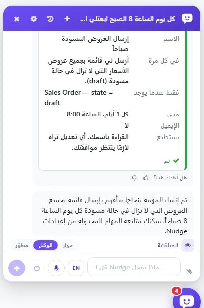
«كل يوم الساعة 9، أرسل لي طلبات عروض الأسعار…» ← بطاقة المهمة المجدولة (الاسم، كل مرة، فقط عندما، متى، البريد، ما يجوز لها) معلَّمة Done، والإجابة.
النتيجة
في التجربة كانت البطاقة “Scheduled task: RFQs waiting for my approval — Only when there is: Purchase Order — state = to approve — When: Every day, at 8:00 — Email: Yes — It may: Read, as you. A change it finds needed waits for your yes.” وبعد الموافقة ظهرت المهمة بـ Next Run Oct 14, 8:00 AM؛ وجلب Run Now التنبيه “Nudge is done. Here is the purchase order waiting for your approval: Reference: P00015 — Vendor: Wood Corner — Total Amount: $1,446.00”.
ملاحظة تُعدّ السجلات أولًا: إذا لم يطابق شيء أو لم يأتِ جديد لا يُسأل الذكاء الاصطناعي ولا يُصرف شيء. والمهام المراقِبة تنظر كل 10 دقائق. و5 مهام لكل شخص افتراضيًا (Settings ‣ Nudge ‣ Scheduled Tasks per Person؛ والصفر يوقفها)؛ وعند الحدّ يقول Nudge ذلك: “عدد المهام المجدولة وصل للحد الأقصى (5 مهام)”.
Odoo 17 و18 و19 · Community وEnterprise
C18قائمة مواد أو PDF من مورّد ← المنتجات أو الفاتورة
أرفق قائمة مواد فيجد Nudge لكل سطر كل منتج محتمل، ولا يُشترط أن تطابق الأسماء الكتالوج، مع الكمية في كل مستودع. وأرفق فاتورة مورّد وقل “دورلي على فاتورتها” فيفتح الفاتورة أو أمر الشراء أو الـ RFQ الذي تخصه ويقول على أي شيء طابق.
الخطوات
مشبك الورق ‣ ملف الـ PDF.
في وضع Agent: “شو عندي بالستوك من هي المواد؟” أو “دورلي على فاتورتها”.
تسجيل التجربة · 18 ثانية
النتيجة
في التجربة أجاب ملف material_list_site_b.pdf مع السؤال “What do I have in stock of these?”: “1. Office Chair Black: 10 units on hand ([FURN_0269]). 2. Customizable Desk: Available in multiple variants… Stock ranges from 45 to 70 units depending on the variant you need… 3. Pipe 1/2 inch: 120 units on hand ([PIPE-12]).”
ملاحظة الـ PDF الممسوح ضوئيًا لا نص فيه: يطلب Nudge صورة له.
Odoo 17 و18 و19 · Community وEnterprise
C19إجراءات “Use in AI” في تطبيق Odoo AI (نسخة Enterprise)
مع Nudge: Odoo AI الذي يُنصَّب تلقائيًا على Enterprise مع تطبيق AI، يعرض الوكيل إجراءات الخادم المعلَّمة “Use in AI” وينفّذها بعد بطاقة.
الخطوات
اسأل “Which AI actions can you run here?”
ثم “Find the AI action 'Read group' and run it to count our contacts per country”.
اضغط Yes, do it على البطاقة “Run the AI action …”.
تسجيل التجربة · 35 ثانية
النتيجة
في تجربة Enterprise (مع Claude) عرض Nudge 6 من 12 إجراءً (Add tags وMove in folder وAdjust search وGet fields وCompute report measures وGet menu details)، ثم البطاقة “Run the AI action “AI: Read group”” والنتيجة: جدول جهات الاتصال بحسب الدولة (No country set 2,331؛ United Arab Emirates 296؛ China 6؛ Hong Kong 1؛ Italy 1؛ Qatar 1)، وأُنهي بـ “I haven't changed anything.”
Odoo 17 و18 و19 · Enterprise فقط
C20لا يحذف أبدًا؛ يؤرشف بدلًا من ذلك
أيًّا كان السائل، لا يحذف Nudge السجلات: يؤرشف أو يلغي بدلًا من ذلك، ويقول ذلك.
الخطوات
اطلب “احذف جهة الاتصال هذه”؛ يعرض Nudge أرشفتها.
اطلب “Archive the product Office Chair Black”؛ تعرض البطاقة التغيير على Active.
النتيجة
في التجربة رُفض «Archive the product Office Chair Black» لأن المستخدم لا يملك الصلاحية (انظر G1)؛ ولم يُحذف أو يُؤرشف شيء.
ملاحظة في وضع Developer يمكن حذف ما بناه Nudge نفسه عند طلبه بالاسم (D13).
Odoo 17 و18 و19 · Community وEnterprise
D. وضع Developer
للمديرين عندما يُفعَّل المفتاح: يبني Nudge ما يبنيه مطوّر Odoo متمرّس، ويعرض الكود كاملًا والفرق على البطاقة، ويجرّبه على سجل وهمي، ويتراجع عنه عند الطلب.
D1قواعد الأتمتة
صِف ما يجب أن يحدث عند حدث فيبني Nudge قاعدة الأتمتة: يقرأ ما يعمل أصلًا على النموذج، ويكتب الكود ويفحصه، ويعرض المحفّز والكود كاملًا على البطاقة، وينشئ القاعدة بموافقتك.
الخطوات
المدير: Settings ‣ Nudge ‣ Nudge for Developers؛ ثم اضغط Dev تحت الرسائل.
اكتب “When a quotation above 10,000 is confirmed, create a To Do activity for Ebrahim” أو “لما تنعمل جهة اتصال جديدة خلّي لغتها عربي”.
اقرأ البطاقة واضغط Yes, do it؛ ثم “جرّبها” على سجل وهمي (D11).
تسجيل التجربة · 53 ثانية
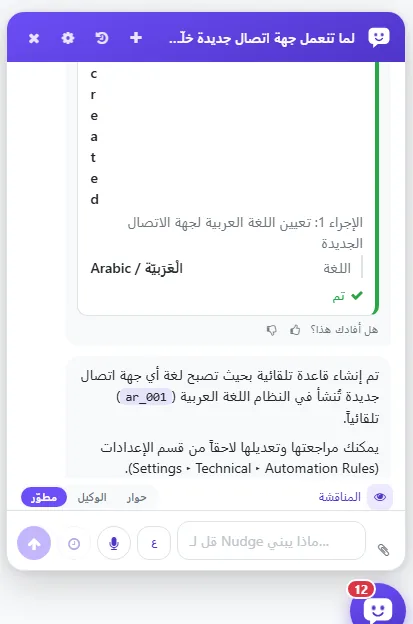
«عند إنشاء جهة اتصال، اجعل لغتها العربية» ← بطاقة قاعدة الأتمتة منفَّذة (النموذج، متى، الإجراء) وأين تجدها.
النتيجة
في التجربة أُكّدت البطاقة “Create: automation rule “Activity for confirmed order above 10,000””، وجُرّبت القاعدة على عرض سعر وهمي، وختم Nudge بـ: “I have set up an automation rule under Settings ‣ Technical ‣ Automation Rules that creates a “To Do” activity for you whenever a quotation above 10,000 is confirmed. I also successfully tested it using a trial record.” وتُظهر الخطوات تشغيل check_python_code قبل prepare_automation. وفي الجولة العربية انتهى “لما تنعمل جهة اتصال جديدة خلّي لغتها عربي” بإنشاء القاعدة، وبعد “جرّبها”: “عند إنشاء جهة اتصال جديدة، يتم تعيين لغتها تلقائياً إلى اللغة العربية (ar_001)”.
ملاحظة كل ما يُبنى يُسجَّل تحت اسم الموديول nudge_custom ويبقى بعد إزالة Nudge؛ ولا يُمسّ أبدًا عرض أو حقل يخصّ موديولًا.
Odoo 17 و18 و19 · Community وEnterprise
D2إجراءات الخادم (يُفحص الكود أولًا)
يكتب Nudge إجراء خادم ويفحص كوده قبل عرضه: الكود كاملًا على البطاقة. ويمكن وضعه في قائمة Actions لنموذج أو خلف زر.
الخطوات
في وضع Dev اكتب “ضيف بقائمة Actions تبع جهات الاتصال زر يأرشفها”.
اقرأ الكود على البطاقة “إنشاء: إجراء خادم …” واضغط Yes, do it.
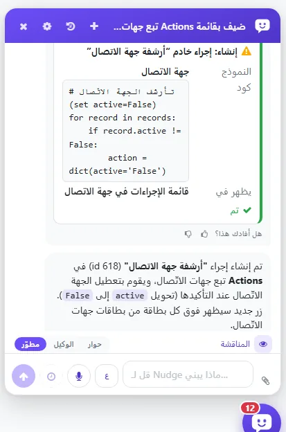
قائمة Actions في قائمة جهات الاتصال مع إجراء الخادم الذي صنعه Nudge («أرشفة جهة الاتصال») في آخرها.
النتيجة
في التجربة أنتج “Add an action in the Actions menu of contacts that archives them” البطاقة “Create: server action “Archive Contact””، وأنتج التوأم العربي البطاقة “إنشاء: إجراء خادم “أرشفة جهة الاتصال””. ويُظهر سجل المطوّر في D1 النمط: يعمل check_python_code، والنسخة الأولى التي تفشل في الفحص تُعاد كتابتها قبل أي بطاقة.
Odoo 17 و18 و19 · Community وEnterprise
D3الإجراءات المجدولة
cron بالكلام: يبني Nudge الإجراء المجدول بكوده وفترته، ويستطيع تشغيله مرة على سجل وهمي للتأكد منه.
الخطوات
في وضع Dev اكتب “كل يوم اتنين ذكّر البائعين بالعروض اللي صرلها أكتر من 30 يوم”.
اضغط Yes, do it على “إنشاء: إجراء مجدول …”.
اكتب “جرّبه هلق مرة وحدة”.
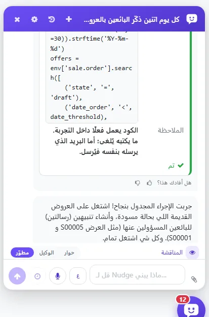
«كل يوم اثنين، ذكّر مندوبي المبيعات بعروض الأسعار الأقدم من 30 يوماً» ← الإجراء المجدول بشيفرته، مجرَّباً مرة في الحال.
النتيجة
في التجربة أنشأ Nudge “Remind Salespeople of Old Quotations” وكتب: “I've set up a scheduled action to run every Monday at 8:00 AM… You can find it under Settings ‣ Technical ‣ Scheduled Actions.” وأجاب “Try it once now”: “I ran the scheduled action as a test—it successfully checked for qualifying offers and scheduled the reminder activities as configured!” وفي الجولة العربية: “جربت الإجراء المجدول بنجاح! اشتغل على العروض القديمة اللي بحالة مسودة، وأنشأ تنبيهين (رسالتين) للبائعين المسؤولين عنها (مثل العرض S00005 و S00001).”
ملاحظة لا يُخلط بالمهام المجدولة في وضع Agent (C17) التي تقرأ فقط ولا تحتاج كودًا.
Odoo 17 و18 و19 · Community وEnterprise
D4قوالب البريد
يكتب Nudge قالب mail.template لنموذج، بعنوان ونص وقيم السجل، ويعرض إرسال نسخة تجريبية إلى عنوانك.
الخطوات
في وضع Dev اكتب “اعمل قالب إيميل لتذكير الزبون بدفع الفاتورة”.
اضغط Yes, do it على “إنشاء: البريد …”؛ ثم “ابعتلي نسخة تجربة”.
في التجربة العربية عرض “اعمل قالب إيميل لتذكير الزبون بدفع الفاتورة” البطاقة “إنشاء: البريد «تذكير بدفع الفاتورة»” وانتهى بـ: “أعددت لك قالب إيميل لتذكير الزبون بدفع الفاتورة بالتصميم الكلاسيكي الأنيق، ويحتوي على تفاصيل الفاتورة والمبلغ المستحق وزر لعرضها. هل ترغب في إرسال بريد تجريبي إلى عنوانك…؟”
ملاحظة تُحفظ القوالب في Settings ‣ Technical ‣ Email Templates.
Odoo 17 و18 و19 · Community وEnterprise
D5رسائل بتصميم: 4 أنماط، عربية من اليمين إلى اليسار، معاينة، نسخة تجريبية
مع Nudge: Emails (يُنصَّب من Apps؛ ويحتاج Discuss) اطلب بريدًا واختر نمطًا: classic أو modern أو minimal أو formal. يقترح Nudge العنوان والنص وقيم السجل في جدول وأسطره وصندوقًا لما يجب أن يجيب عنه القارئ؛ ويختمه الشعار واسم الشركة. والنص العربي يجعله من اليمين إلى اليسار. وتعرض البطاقة البريد كما سيُقرأ لسجل حقيقي؛ وبعد الموافقة يعرض Nudge “Send me a test”.
الخطوات
في وضع Dev: “لما يتأكد عرض السعر ابعت إيميل شكر للزبون، بستايل modern” أو “Design a quotation email in the modern style with the order lines and a 'please confirm by Thursday' box”.
اقرأ البطاقة: Model وStyle وTo وCopy to وSubject والمعاينة “As S00049 reads it”.
اضغط Yes, do it ثم “ابعتلي نسخة تجربة من الإيميل لإيميلي”.
تسجيل التجربة · 43 ثانية
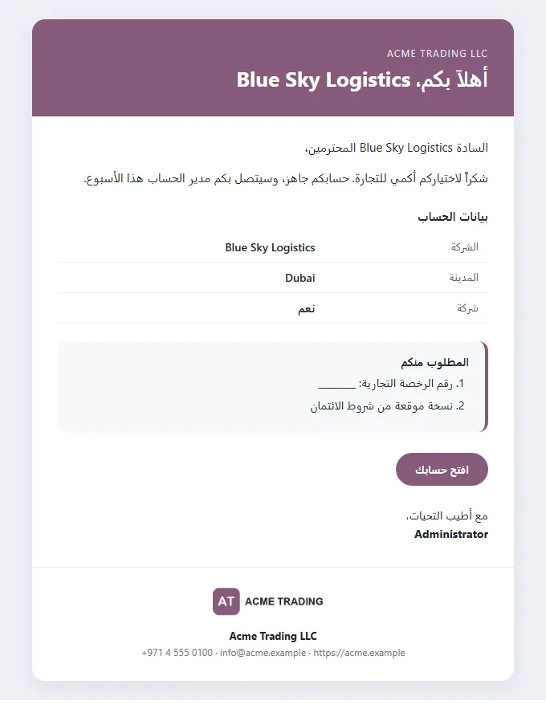
بريد مصمَّم بالأسلوب الحديث (ترويسة ملوّنة، بطاقات، زر مستدير) معاينةً على سجل حقيقي؛ والعربي منه من اليمين إلى اليسار.
النتيجة
في التجربة كانت البطاقة “Create: email “Modern Offer Email” — Model: Sales Order — Style: Modern: a large coloured header, rounded cards, a round button — To: Customer (partner_id) — Subject: Offer S00049 from My Company (San Francisco) — As S00049 reads it — Under it: The logo and the name of the company”. وبعد الموافقة: “The template has been created as Modern Offer Email (ID: 41)…”. وأجاب “Send me a test”: “I have sent a test of the Modern Offer Email template for offer S00049 to your email address.” ووصل البريد “[Test] Offer S00049” إلى Ebrahim.
ملاحظة لم يعد Nudge: Emails يُنصَّب تلقائيًا؛ يثبّته المدير من Apps. وتحتاج النسخة التجريبية إلى خادم بريد صادر: في محاولة سابقة بدونه قال Nudge: “The test did not leave… the outgoing mail server may need a look.”
Odoo 17 و18 و19 · Community وEnterprise
D6زر مراجعة البريد
زر على النموذج يفتح نافذة فيها البريد جاهزًا للسجل المعروض: اقرأه، عدّله، أضف Cc، أرفق ملفًا. وSend ينفّذ ما يفعله الزر الذي يرافقه (اعتماد، تأكيد، تصديق) ويرسل مع Cc حقيقية؛ وإغلاق النافذة لا يفعل أيًّا منهما. ويمكن جعل حقول إلزامية قبل الإرسال.
الخطوات
في وضع Dev: “حط زر 'إرسال للزبون' على عرض السعر يفتحلي الإيميل لراجعه قبل ما ينبعت”.
اضغط Yes, do it على “إضافة الزر … مع بريده”.
أعد تحميل النموذج واضغط الزر الجديد؛ وأدِر هذه الأزرار من Nudge ‣ Configuration ‣ Emails with Review.
تسجيل التجربة · 33 ثانية
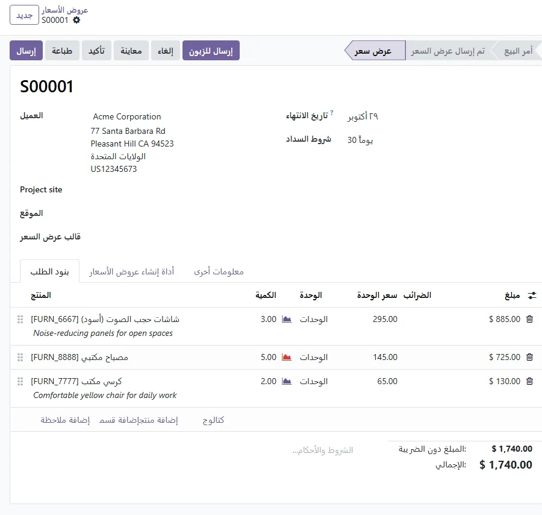
نافذة «Review Email for Quotation» التي يفتحها الزر الجديد: For وFrom وTo وCc وSubject والنص قابلة للتعديل قبل Send.
النتيجة
في التجربة أُكّدت البطاقة “Add the button “Review Email” with its email”؛ وفتح ضغط الزر على عرض السعر النافذة “Review Email for Quotation” بالحقول For وFrom وTo وCc وSubject. وخلفها أنشأ Nudge العرض “Button Review Email with an email, on Sales Order” (الوارث من sale.order.form) والإجراء “Review Email for Quotation (email)”.
ملاحظة يحتاج Nudge: Emails. ويمكن إخفاء الزر الأصلي خلف الجديد، والسماح بالتنفيذ “Without the Email”.
Odoo 17 و18 و19 · Community وEnterprise
D7أزرار على النموذج
يضع Nudge زرًا على النموذج يشغّل إجراء خادم بناه، ويعرضه ويؤكده على البطاقة.
الخطوات
في وضع Dev: “حط زر 'أرشفة' على فورم جهة الاتصال بيشغّل إجراء أرشفة جهة الاتصال”.
اضغط Yes, do it؛ وأعد تحميل النموذج لترى الزر.
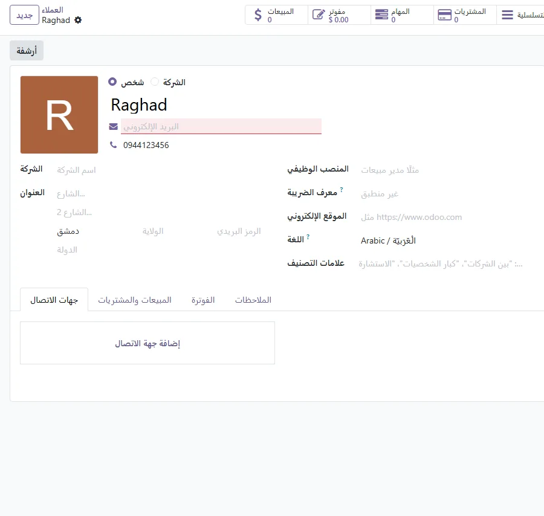
زر «Archive» الذي وضعه Nudge على نموذج جهة الاتصال، ويشغّل إجراء أرشفة جهة الاتصال.
النتيجة
في التجربة أنتج الطلب البطاقة “إنشاء: إجراء خادم “أرشفة جهة الاتصال”” (وبالإنجليزية “Create: server action “Archive Contact Action””) وأُكّدت؛ وتُظهر لقطة الشاشة المأخوذة بعدها الزر على نموذج جهة الاتصال.
Odoo 17 و18 و19 · Community وEnterprise
D8حقول جديدة (x_ على النموذج كما يفعل Studio)
يضيف Nudge حقلًا إلى نموذج ويضعه على النموذج: تعرض البطاقة التسمية والاسم التقني (x_…) والنوع وموضعه.
الخطوات
في وضع Dev: “ضيف حقل 'رقم المشروع' على جهة الاتصال” أو “Add a Site Code text field to the contact form, under the Website”.
اقرأ البطاقة واضغط Yes, do it؛ وأعد تحميل النموذج.
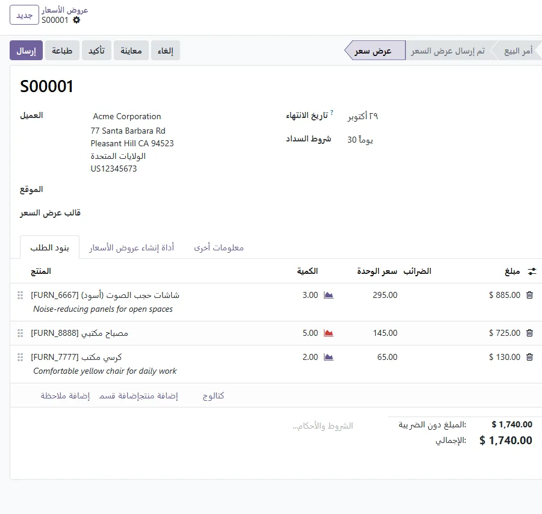
حقل «Project site» جديد (حقل x_ كما يصنعه Studio) على نموذج عرض السعر بجانب العميل.
النتيجة
في التجربة كانت البطاقة “Add the field “Site Code” — Model: Contact — Field: Site Code — Technical name: x_site_code — Type: Text — On the form: after Website Link (res.partner.form)”. وبعد الموافقة: “I have added the Site Code text field right after the Website field on the contact form.”، وصار x_site_code موجودًا على res.partner.
ملاحظة يحتاج النموذج إلى إعادة تحميل ليعرض الحقل الجديد.
Odoo 17 و18 و19 · Community وEnterprise
D9تعديل الشاشات (امتداد XPath والفرق على البطاقة)
يُنفَّذ تعديل الشاشة كعرض وارث بـ XPath: لا يُعدَّل العرض الأصلي أبدًا. وتعرض البطاقة العرض وXPath والتغيير وفرقًا (diff) للنتيجة.
الخطوات
في وضع Dev: “خبّي حقل الموقع الإلكتروني من فورم جهة الاتصال”.
اقرأ الفرق على البطاقة واضغط Yes, do it.
“رجّع كل شي عملته” يزيله.
تسجيل التجربة · 37 ثانية
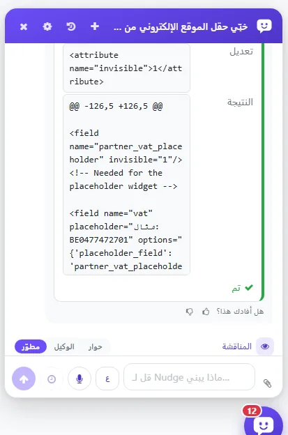
«أخفِ حقل Website من نموذج جهة الاتصال» ← تعرض البطاقة XPath وتغيير الخاصية والفرق؛ ولا يُعدَّل العرض الأصلي أبداً.
النتيجة
في التجربة كانت البطاقة “Change the screen: Hide Website field — Model: Contact — View: res.partner.form (form) — Where: //field[@name='website'] · attributes — Change: <attribute name="invisible">1</attribute>” مع الفرق “- <field name="website" … /> + <field name="website" … invisible="1"/>”. وبعد “Undo what you built”: “I've undone the change, and the Website field is now visible again on the contact form.”
Odoo 17 و18 و19 · Community وEnterprise
D10تقارير PDF
يبني Nudge تقرير PDF بـ QWeb لنموذج، مع ترويسة الشركة، ويضيفه إلى قائمة Print.
الخطوات
في وضع Dev: “اعملي تقرير PDF لعرض السعر فيه الزبون والتاريخ وبنود الطلب”.
اضغط Yes, do it؛ وافتح عرض سعر وانظر في قائمة Print.
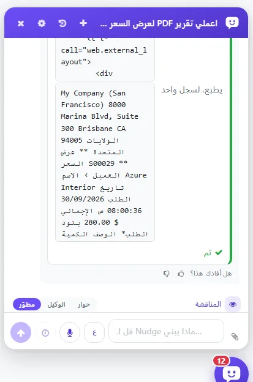
«اصنع تقرير PDF لعروض الأسعار بالعميل والتاريخ وبنود الطلب» ← بطاقة التقرير بعد الموافقة.
النتيجة
في التجربة العربية أنتج الطلب البطاقة “إنشاء: تقرير “عرض السعر”” وأُكّدت؛ وتُظهر لقطة الشاشة بعدها التقرير في قائمة Print لعرض السعر.
Odoo 17 و18 و19 · Community وEnterprise
D11تجربة على سجل وهمي
تشغّل try_automation قاعدة أو إجراءً مجدولًا على سجل وهمي يُنشأ للتجربة؛ ويُهمل كل شيء بعدها، ويبلغ Nudge بما حدث.
الخطوات
بعد بناء القاعدة اكتب “جرّبها” / “جرّب القاعدة على عرض سعر تجريبي”.
اضغط Yes, do it على “تجربة على سجل وهمي: …”.
تسجيل التجربة · 53 ثانية
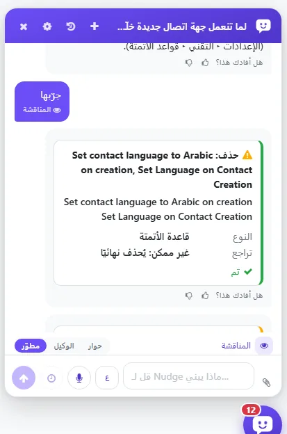
«جرّبها» ← القاعدة مجرَّبة على جهة اتصال تجريبية والنتيجة مبلَّغة؛ وكل ما نتج عن التجربة يُستبعد.
النتيجة
في التجربة فشلت المحاولة الأولى بوضوح: “The person said yes, but it did not work, and nothing was changed. partner_id points to a record of res.partner: give its id, not 'Raghad دمشق'. search_records finds it.”؛ فبحث Nudge عن المعرّف ونجحت المحاولة الثانية. وفي الجولة العربية: “تجربة القاعدة بنجاح! تم إنشاء عرض سعر تجريبي، وعند تغيير حالته إلى أمر بيع (sale)، عملت القاعدة بشكل صحيح وقامت بإنشاء البريد الإلكتروني وإعداده للإرسال إلى الزبون”.
Odoo 17 و18 و19 · Community وEnterprise
D12التراجع عمّا بُني
“رجّع كل شي عملته” يزيل ما بناه Nudge في هذه المحادثة كله، الأخير أولًا، بعد بطاقة تعدّ العناصر.
الخطوات
في المحادثة نفسها اكتب “Undo what you built” أو “رجّع كل شي عملته بهالمحادثة”.
اضغط Yes, do it على “Undo what was built: N item(s)”.
تسجيل التجربة · 37 ثانية
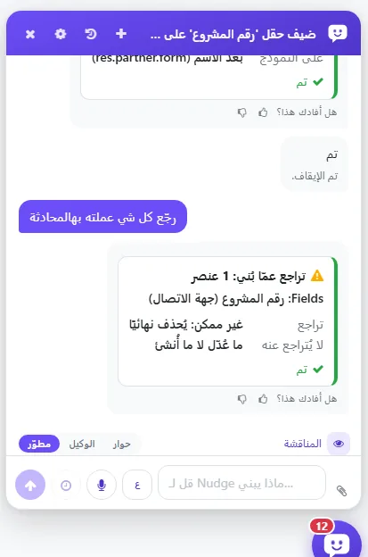
«تراجع عمّا بنيته» ← بطاقة «Undo what was built: 1 item(s)» منفَّذة، والقاعدة اختفت.
النتيجة
في التجربة، بعد قاعدة الأتمتة، عرض “Undo what you built” البطاقة “Undo what was built: 1 item(s)” وأزال القاعدة؛ وبعد تعديل الشاشة أجاب “I've undone the change, and the Website field is now visible again on the contact form.” وفي محادثة جديدة قال: “There is nothing to undo, as no customizations or rules have been built in this conversation yet.”
ملاحظة التراجع بحسب المحادثة. ويستطيع المديرون التراجع عن بناء طلب من Nudge ‣ What Nudge Did ‣ Requests.
Odoo 17 و18 و19 · Community وEnterprise
D13حذف ما بناه (فقط عند طلبه بالاسم)
ما بناه Nudge يُوقف بتعديل، ولا يُحذف إلا عندما تطلب ذلك بالاسم؛ وتسمّي بطاقةٌ العنصر أولًا.
الخطوات
اكتب “احذف إجراء أرشفة جهة الاتصال يلي عملناه”.
اضغط Yes, do it على “حذف: …”.
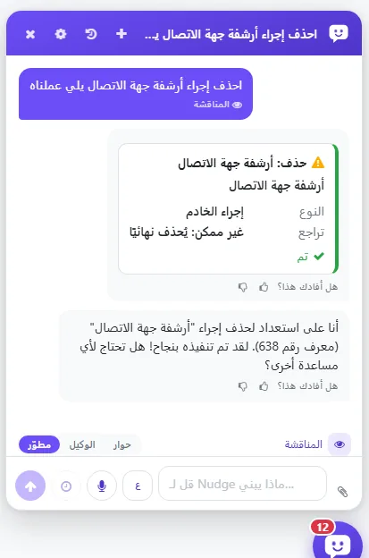
«احذف إجراء أرشفة جهة الاتصال الذي صنعناه» ← بطاقة ⚠ Delete («Undo: Not possible: deleted for good») منفَّذة، فقط لأنه طُلب بالاسم.
النتيجة
في التجربة العربية عرض “احذف إجراء أرشفة جهة الاتصال يلي عملناه” البطاقة “حذف: Archive contact” وانتهى بـ: “تم حذف إجراء خادم أرشفة جهة الاتصال (Archive contact) بنجاح.”
ملاحظة العناصر تحت nudge_custom فقط؛ ولا يُحذف أبدًا عرض أو حقل يخصّ موديولًا.
Odoo 17 و18 و19 · Community وEnterprise
D14قراءة ما يعمل تلقائيًا (/rules)
/rules مع اسم نموذج يعرض ما يعمل من تلقاء نفسه على هذا النوع من السجلات: قواعد الأتمتة وإجراءات الخادم والإجراءات المجدولة وقوالب البريد. وبدون اسم: الشاشة التي أمامك. بدون ذكاء اصطناعي.
الخطوات
في وضع Dev اكتب “/قواعد sale.order”، أو “/قواعد” على الشاشة.
أو اسأل بالكلام: “شو في أشياء بتشتغل لحالها على عروض الأسعار؟”
النتيجة
في التجربة أجاب “/قواعد sale.order” فورًا (0.0 ثانية، بدون ذكاء اصطناعي) باللغتين. وأجاب السؤال بالكلام بالعربية: “حالياً، ليس هناك قواعد أتمتة (Automation Rules) أو مهام مجدولة فعّالة تعمل لوحدها تلقائياً على عروض الأسعار… ولكن هناك 4 إجراءات خادم (Server Actions) متوفرة في قائمة الإجراءات… إرسال رسالة بريد إلكتروني (action_quotation_send)، إنشاء مشروع (action_create_project)…”
ملاحظة يعرض أيضًا ما بناه Nudge نفسه، تحت الموديول nudge_custom.
Odoo 17 و18 و19 · Community وEnterprise
E. الفريق
Nudge بين زملائك: @Nudge في الـ chatter وفي Discuss، ودروس يعتمدها المدير، وملاحظات التقييم، وملفات الشركة التي يرفعها المديرون.
E1@Nudge في الـ chatter لأي سجل
مع Nudge: Discuss (يُنصَّب من Apps؛ ويحتاج Discuss) اكتب @Nudge وسؤالك في الـ chatter لسجل. يجيب Nudge تحته كملاحظة داخلية باسم من سأل، ممّا يراه كل قارئ للسجل: حقوله والسجلات المرتبطة وآخر الرسائل. ولا يغيّر شيئًا.
الخطوات
افتح عرض سعر؛ وفي الـ chatter اكتب “@Nudge لخّصلي هالطلب بسطرين” أو “@Nudge what is the total of this order?”.
أرسل؛ بعد ثوانٍ تظهر الملاحظة الداخلية ويصلك تنبيه.
تسجيل التجربة · 13 ثانية
النتيجة
في التجربة حصل “@Nudge what is the total of this order?” على S00049 على الملاحظة الداخلية: “The total of quotation S00049 is $1,055.00 (with an untaxed amount of $1,055.00).” وأُجيب “@Nudge لخّصلي هالطلب بسطرين” خلال 23 ثانية (14 ثانية للتوأم الإنجليزي).
ملاحظة لم يعد Nudge: Discuss يُنصَّب تلقائيًا؛ يثبّته المدير. ولا تُقرأ الحقول المحصورة ببعض المجموعات. ومن لا يملك Nudge ويذكره يُبلَّغ بذلك.
Odoo 17 و18 و19 · Community وEnterprise
E2@Nudge في قنوات Discuss
تعمل الإشارة نفسها في قناة Discuss: @Nudge وسؤال عن Odoo، ويأتي الجواب في القناة للجميع.
الخطوات
في قناة اكتب “@Nudge كيف منسجل تكاليف الشحن على البضاعة؟”
يصل الجواب في القناة.
@Nudge في قناة #general في Discuss: سؤال تكاليف الشحن وإجابة Nudge بأربع خطوات مع رابط التوثيق.
النتيجة
في التجربة أُجيب “@Nudge كيف منسجل تكاليف الشحن على البضاعة؟” في القناة خلال نحو 45 ثانية (18 ثانية للتوأم الإنجليزي)؛ وحفظ السجل التوقيت لا النص.
Odoo 17 و18 و19 · Community وEnterprise
E3دروس يعتمدها المدير (Business Notes)
في Nudge ‣ What Nudge Knows ‣ Business Notes يكتب المديرون كيف تسمّي الشركة الأشياء وكيف تعمل، ويعتمدون أو يرفضون الدروس التي اقترحها الموظفون بتصحيحاتهم وملاحظات عدم الإعجاب. والملاحظات المعتمدة تفتتح كل محادثة.
الخطوات
المدير: Nudge ‣ What Nudge Knows ‣ Business Notes.
اكتب ملاحظة (“We call quotations offers”) أو افتح درسًا بحالة Proposed واضغط Approve أو Refuse.
تسجيل التجربة · 55 ثانيةBusiness Notes: الدروس المقترحة مع «Learnt From» وزرّي Approve / Refuse ومفتاح Active.
النتيجة
في التجربة عرضت القائمة دروسًا بحالة Proposed مع Approve وRefuse: “We call quotations offers”، و“I want a shorter answer — Said after the answer to: What…”، و“الخصم عنا ما بيتجاوز 10% على أي عرض سعر”، وتوائمها. وبعد اعتماد ملاحظة العروض صارت إجابات Nudge تقول “offers” (“I will count the offers for Raghad”).
ملاحظة لا يقرأ الدروس إلا المديرون؛ ولا يُتعلَّم شيء بدون اعتماد.
Odoo 17 و18 و19 · Community وEnterprise
E4قائمة التقييمات
كل إعجاب أو عدم إعجاب مع ملاحظته يُعرض للمديرين في Nudge ‣ What Nudge Knows ‣ Feedback بجانب الإجابة التي قيّمها.
الخطوات
المدير: Nudge ‣ What Nudge Knows ‣ Feedback.
افتح سطرًا لتقرأ السؤال والإجابة وما كان خاطئًا.
قائمة Feedback: تاريخ الإنشاء، والمستخدم، والمحادثة، والتقييم (Not Useful)، والملاحظة، والإجابة التي قُيِّمت.
النتيجة
في التجربة سُجّلت الملاحظة “It should also say the price per metre” المرفقة بعدم إعجاب على إجابة الأنبوب 12.7 ملم، وظهرت درسًا بحالة Proposed للمدير.
Odoo 17 و18 و19 · Community وEnterprise
E5ملفات الشركة التي يرفعها المديرون
Nudge ‣ What Nudge Knows ‣ Company Files: يرفع المدير ملف PDF أو نصًا، ويقول ما الغرض منه، ويمكنه حصره بمجموعات. وRead Again يعيد قراءة ملف مُبدَّل. ويذكر Nudge الملف والصفحة؛ و/file يجد المقاطع بدون ذكاء اصطناعي.
الخطوات
المدير: Company Files ‣ New؛ املأ Name وWhat It Is For والملف وFor the Groups إن لزم.
كل مَن يُسمح له: “/ملف إجازة سنوية” أو سؤال عن السياسة.
النتيجة
في التجربة عرض “/file annual leave” و“/ملف إجازة سنوية” مقاطع ملف “Leave policy” خلال 0.1 ثانية مع صفحة كل مقطع؛ واقتبس السؤال بالكلام “30 calendar days… after the 6-month probation period… 150% of the hourly wage… from the “Leave policy” file, page 1” (B10).
ملاحظة الملف المحصور بمجموعات لا يراه غيرها، ولا مقاطعه.
Odoo 17 و18 و19 · Community وEnterprise
E6مصادر Odoo AI ووكلاؤه (نسخة Enterprise)
مع Nudge: Odoo AI على Enterprise تصبح مصادر تطبيق AI ووكلاؤه متاحة لـ Nudge أيضًا، بجانب ملفات شركته ومفاتيح مزوّديه.
الخطوات
نصّب تطبيق AI؛ يُنصَّب Nudge: Odoo AI تلقائيًا.
اسأل Nudge سؤالًا تجيب عنه مصادر تطبيق AI.
Enterprise: «أي إجراءات ذكاء اصطناعي يمكنك تشغيلها هنا؟» ← إجراءات خادم Odoo AI مسرودة بحسب المجموعة (Documents، Search and navigation…).
النتيجة
في التجربة أجاب «Which AI actions can you run here?» بقائمة إجراءات Odoo AI، منها Documents (Add tags, Move in folder) ومساعدات البحث والتنقل (Adjust search…)، 6 من 12 معروضة.
Odoo 17 و18 و19 · Enterprise فقط
F. Studio (نسخة Enterprise)
مع Nudge: Studio الذي يُنصَّب تلقائيًا على Enterprise: قواعد الموافقة على الأزرار بالكلام، والمؤشّر داخل محرّر Studio.
F1قواعد الموافقة على الأزرار
مع Nudge: Studio قل بالكلام مَن يجب أن يوافق على زر ومتى؛ يقرأ Nudge قواعد الموافقة الموجودة أولًا، ويجد المجموعة أو الشخص، ويعرض القاعدة على بطاقة: النموذج والزر والموافقون والخطوة والشرط والرسالة التي تظهر على الزر.
الخطوات
في وضع Dev: “Confirming a purchase order above 50,000 needs the finance manager's approval”.
Studio على Enterprise: «تأكيد أمر شراء يتجاوز 50,000 يحتاج إلى موافقة مدير المالية» ← بطاقة قاعدة الموافقة (النموذج، الزر، مجموعة الموافقة، الخطوة، فقط عندما Total > 50000) منفَّذة.
النتيجة
في تجربة Enterprise (مع Claude) كتب Nudge: “I'll check what approval rules already exist on purchase orders, and who the finance manager is”، وطابق أقرب مجموعة لمدير الحسابات، وعرض “Create: approval rule on “Confirm Order” — Model: Purchase Order — Button: Confirm Order — Approval group: … — Step: 1 — Only for: Total > 50000 — Shown on the button: Purchase orders above 50,000 need the finance manager's approval before confirming.” وبعد الموافقة وُجدت القاعدة على purchase.order / button_confirm بالشرط amount_total > 50000، وأظهر طلب شراء فوق الحد “An approval is missing” على Confirm. وعندما قيل له إن شخصًا واحدًا بالاسم هو من يوافق، أعاد البطاقة بذلك الشخص موافقًا وبلا مجموعة.
ملاحظة يحتاج web_studio؛ ويُنصَّب Nudge: Studio تلقائيًا معه.
Odoo 17 و18 و19 · Enterprise فقط
F2الإرشاد داخل Studio
داخل محرّر Studio يعرف المؤشّر التبويبات والحقول التي تُسحب وAdd وUndo/Redo وNew model: اسأل كيف تضيف حقلًا فيمشي معك في Studio خطوة خطوة.
الخطوات
افتح Studio على نموذج واسأل “كيف أضيف حقلًا نصيًا تحت Job Position؟”
اختر على الشاشة واتبع المؤشّر: تبويب Add، ونوع الحقل، وتبويب Properties، ثم Close.
تسجيل التجربة · 43 ثانية
النتيجة
في تجربة Enterprise كانت الجولة 4 خطوات: “You're in Studio on the Contact form. Open the Add tab (New) in the sidebar…” ثم “Drag the field type you need onto the form (here Text is an example…). Drop it where you want it, e.g. under Job Position.” ثم “Click the new field on the form, then in the Properties tab set its Label, and options like Required, Read-only or Default value.” ثم “When you're happy, click Close (leave Studio). Your change is saved automatically…”. وأنشأ السحب حقلًا نصيًا “New Text” على جهة الاتصال.
Odoo 17 و18 و19 · Enterprise فقط
G. الثقة والإدارة
ما يُبقي Nudge ضمن حدوده: صلاحياتك، والمجموعات، والمفاتيح، وسجل التدقيق، والميزانيات، والاستهلاك، والأسرار، والمزوّدون، وملف قاعدة البيانات.
G1يعمل باسم المستخدم
تعمل كل أداة بصلاحياتك وقواعد سجلاتك وشركاتك: السجل الذي لا تستطيع فتحه لا يُعثر عليه ولا يُعدّ، والزر الذي لا تملكه لا يُضغط، والتغيير الذي لا يجوز لك يُرفض.
الخطوات
اطلب شيئًا لا يجوز لحسابك؛ يقول Nudge ذلك ويقترح مَن يستطيع.
راجع Nudge ‣ What Nudge Did ‣ Changes: كل تغيير مسجَّل باسمك.
تسجيل التجربة · 12 ثانية
النتيجة
في التجربة طلب مستخدم بلا صلاحيات على المنتجات “Archive the product Office Chair Black”؛ فأجاب Nudge: “I found the product “Office Chair Black” (ID: 17), but I don't have the required permissions to archive products with your current user account. You may need to ask an administrator to archive it for you.”
ملاحظة النماذج التي تحمل طريقة عمل Odoo والحقول التي تحمل أسرارًا مغلقة أيًّا كانت الصلاحيات.
Odoo 17 و18 و19 · Community وEnterprise
G2المجموعات: User وAgent User وManager وSettings
Nudge / User يتحدث ويرى محادثاته. وNudge / Agent User يطلب العمل أيضًا ويقرأ سجله. وNudge / Manager يرى كل المحادثات وتكلفتها والمزوّدين والملف، ويكتب Business Notes. ومجموعة Settings تنشئ المزوّدين والمفاتيح. و“Nudge for All Internal Users” يمنح الجميع مجموعة User دفعة واحدة.
الخطوات
Settings ‣ Users ‣ افتح مستخدمًا ‣ Nudge: اختر User أو Agent User أو Manager.
أو Settings ‣ Nudge ‣ Nudge for All Internal Users.
تبويب Access Rights في نموذج المستخدم مع دور Nudge (Manager) بين أدوار التطبيقات الأخرى.
النتيجة
في لقطة الإعدادات في التجربة ظهر المفتاح “Nudge for All Internal Users” بين إعدادات Nudge (مطفأً في تلك القاعدة).
ملاحظة يكون المدير Manager بعد التنصيب.
Odoo 17 و18 و19 · Community وEnterprise
G3المفاتيح، مطفأة افتراضيًا ما عدا Agent
في Settings ‣ Nudge المفاتيح: Agent Mode (مفعّل)، وPython for the Agent وSQL for Administrators وNudge for Administrators وNudge for Developers (كلها مطفأة)، وRecords per Plan (200)، وScheduled Tasks per Person (5)، وScreen Sharing وVoice (مفعّلان)، وSpeech Turned into Text By، وAnswers at the Same Time.
الخطوات
Settings ‣ Nudge.
فعّل ما تسمح به؛ واضبط الأرقام؛ ثم Save.
Settings ‣ Nudge: وضع Agent مفعّل، وPython وSQL وNudge للمديرين وNudge للمطورين معطَّلة، 200 سجل لكل خطة، 5 مهام لكل شخص، «Nudge for All Internal Users».
النتيجة
في التجربة كانت الصفحة: Screen Sharing: on، وVoice: on، وAgent Mode: on، وPython for the Agent: off، وSQL for Administrators: off، وNudge for Administrators: off، وNudge for Developers: off، وNudge for All Internal Users: off. ومع إطفاء مفتاح المديرين رُفض “Give Marc Demo the Inventory user access”: “the res.users model does not allow changing the groups_id field directly with the current access rights”، وأعطى Nudge المسار في Settings بدلًا من ذلك.
ملاحظة يحدّ Answers at the Same Time الإجابات المتدفقة للجميع معًا: الافتراضي هو عدد http workers في الخادم ناقص اثنين؛ وبعده يطلب Nudge إعادة المحاولة بعد قليل. ولا يُحسب العمل في الخلفية.
Odoo 17 و18 و19 · Community وEnterprise
G4سجل التدقيق: Requests وChanges
يعرض Nudge ‣ What Nudge Did ‣ Requests ما طلبه الناس من Nudge مع كل خطوة، والنموذج، والتوكنز والتكلفة، وهل جرى في الخلفية، وزر Stop للمدير. ويعرض Changes كل سجل أُنشئ أو عُدّل وكل زر ضُغط: مَن، وما كُتب، وما عُرض على الشخص وبماذا أجاب. ولا يمكن تعديله أو حذفه من الواجهة.
الخطوات
المدير: Nudge ‣ What Nudge Did ‣ Requests؛ افتح سطرًا لخطواته.
Nudge ‣ What Nudge Did ‣ Changes؛ صفِّ بحسب الشخص أو النموذج أو التاريخ.
What Nudge Did ‣ Requests: التاريخ، ومن سأل، والطلب، والخطوات، والتغييرات، والنموذج، ورموز الإدخال/الإخراج، والتكلفة، والحالة (Done / Stopped / Failed).
النتيجة
في التجربة كانت أعمدة قائمة Requests: Date وAsked By وRequest وIn the Background وSteps وChanges وModel وInput Tokens وOutput Tokens وCost وState، بصفوف مثل “Send me a test — 1 step — 1 change — gemini-3.5-flash-lite — 61,843 / 54 tokens — 0.000000 — Done”. وحملت Changes أسطرًا مثل “Create: email “Modern Offer Email” — mail.template — Done” و“Button: Send a test of “Modern Offer Email” to you — Done” وسطرًا فاشلًا “prepare_email_review — Failed”.
ملاحظة يقرأ مستخدمو Agent سجل ما فعله Nudge لهم؛ ويقرأ المديرون الكل.
Odoo 17 و18 و19 · Community وEnterprise
G5المحادثات وتكلفتها
يعرض Nudge ‣ Conversations للمديرين مَن سأل ماذا، مع التوكنز والتكلفة لكل محادثة. والمحادثة التي نفّذ Nudge فيها عملًا يمكن أرشفتها لا حذفها.
الخطوات
المدير: Nudge ‣ Conversations.
افتح واحدة لقراءتها؛ وأرشفها عند الحاجة.
ملاحظة لا يرى المستخدمون إلا محادثاتهم.
Odoo 17 و18 و19 · Community وEnterprise
G6ميزانيات لكل شخص في اليوم ولكل شركة في الشهر
Settings ‣ Nudge ‣ Budgets: توكنز أو تكلفة لكل شخص في اليوم، ولكل شركة في الشهر؛ والصفر بلا حدّ. وبعد الحدّ يقول Nudge إن عليه الانتظار حتى الغد أو الشهر القادم.
الخطوات
Settings ‣ Nudge ‣ Budgets: املأ Tokens / Cost per Person and per Day وTokens / Cost per Company and per Month.
Save.
Settings ‣ Nudge ‣ Budgets: الرموز والتكلفة لكل شخص في اليوم، والرموز والتكلفة لكل شركة في الشهر، «What Was Spent».
النتيجة
في التجربة كانت الميزانيات: Tokens per Person and per Day = 300,000، وCost per Person and per Day = 0.00، وTokens per Company and per Month = 0، وCost per Company and per Month = 25.00. وعندما نفدت توكنز اليوم أجاب Nudge: “You used all of your Nudge tokens for today. Try again tomorrow, or ask your administrator.”
ملاحظة تُحسب التكلفة بالأسعار المضبوطة على المزوّد؛ وبدون أسعار لا يُحدّ إلا التوكنز. وتُفحص الميزانيات قبل النداء، فقد تتجاوز الإجابة الأخيرة الحدّ بإجابة واحدة.
Odoo 17 و18 و19 · Community وEnterprise
G7تقرير الاستهلاك
Nudge ‣ Usage: كل نداء إلى مزوّد، محادثةً أو كلامًا، مع التوكنز والتكلفة، مجمَّعًا بحسب الشخص أو اليوم أو الشهر أو النموذج أو الشركة.
الخطوات
المدير: Nudge ‣ Usage.
جمّع بحسب Day أو Person أو Model من شريط البحث.
تقرير الاستهلاك لهذا الشهر مجمّعاً باليوم: الطلبات والرموز والتكلفة لكل يوم.
G8لا تُرسل الأسرار، والمفاتيح للمديرين فقط، ولا telemetry
قيم الحقول التي يوحي اسمها بسرّ (password, token, key) تخرج على هيئة [hidden]، على الشاشة وفي السجلات وفي الكود وفي نتائج SQL. ومفاتيح API يقرؤها المديرون فقط ولا تُرسل إلى المتصفح. ولا يرسل Nudge شيئًا إلى أي مكان غير المزوّد الذي اختُرت. وتُحاط نتائج الأدوات بإطار <data> فأي تعليمات تُوجد داخلها يُبلَّغ عنها ولا تُتَّبع.
الخطوات
لا شيء تفعله: مفعَّل دائمًا.
يضع المديرون المفاتيح في Nudge ‣ Configuration ‣ AI Providers؛ ويستطيع مزوّد Anthropic قراءة ANTHROPIC_API_KEY من بيئة الخادم بدلًا من ذلك.
ملاحظة تُخزَّن المفاتيح نصًا عاديًا كما يخزّن Odoo أسراره: احمِ النسخ الاحتياطية تبعًا لذلك. وعلى الخطة المجانية قد يستعمل المزوّد ما تُرسله؛ فاستعمل بيانات تجريبية هناك.
Odoo 17 و18 و19 · Community وEnterprise
G9مزوّد لكل وضع
Settings ‣ Nudge: المزوّد Default يجيب Talk والأوامر و@Nudge؛ ومزوّد Agent يجيب وضع Agent والمهام المجدولة؛ ومزوّد Developer يجيب وضع Dev (ويعود إلى مزوّد Agent إن لم يُضبط). غالبًا Ollama على جهازك للأسئلة، وGemini أو Claude للعمل.
Settings ‣ Nudge ‣ AI Provider: المزوّد الافتراضي Ollama (محلي)، ومزوّد Agent ومزوّد Developer هو Google Gemini (الطبقة المجانية).
النتيجة
في التجربة كانت الحقول الثلاثة: Default: Ollama (local)، وAgent: Google Gemini (free tier)، وDeveloper: Google Gemini (free tier)؛ وفي تجربة Enterprise كانت الثلاثة Anthropic Claude.
يعرض Nudge ‣ Configuration ‣ AI Providers المزوّدين Google Gemini (free tier) وGroq (free tier) وOpenRouter (free models) وOllama (local) وAnthropic Claude؛ ويمكن إضافة أي API متوافق مع OpenAI (OpenAI, Mistral, DeepSeek). وفي كل نموذج: Test Connection، وFetch Models مع Use، وأسعار لكل مليون توكن، وجهد التفكير، ومجموعة الأدوات (الأساسية للنماذج الصغيرة)، ونموذج للصور، ولـ Ollama زر “Prepare for Nudge” الذي ينسخ النموذج بسياق كافٍ.
الخطوات
Nudge ‣ Configuration ‣ AI Providers ‣ افتح مزوّدًا.
الصق API Key (ومع مفتاح مستخدم في Claude: أيضًا Workspace ID)، ثم Save، ثم Test Connection.
اضغط Fetch Models ثم Use على نموذج؛ واضبط الأسعار إن أردت التكاليف.
نموذج مزوّد الذكاء الاصطناعي لـ Google Gemini (الطبقة المجانية) بعد Fetch Models: «62 models found»، وقائمة النماذج بزر Use على كل منها.
النتيجة
في تجربة Enterprise أجاب نموذج Anthropic Claude على Test Connection بـ “Connection successful.” وعلى Fetch Models بـ “14 models found.”، وعرض claude-sonnet-5-5 وclaude-opus-5-5 وclaude-haiku-5-5 وغيرها مع Use لكل منها؛ وظهر حقل Workspace ID. وأجابت خطة Gemini المجانية تجربة Community كلها؛ وعندما نفدت حصتها قال Nudge: “تم بلوغ الحد المسموح لدى مزود الذكاء الاصطناعي. حاول مرة أخرى بعد دقيقة.”
ملاحظة يحتاج Claude حزمة anthropic في Python على الخادم؛ ويقول Test Connection إن كانت ناقصة. ونماذج Ollama: يبيّن Fetch Models أيها يستعمل الأدوات ويرى الصور؛ والنموذج الصغير لا يقرأ الصور ويقول ذلك.
Odoo 17 و18 و19 · Community وEnterprise
G11ملف قاعدة البيانات
Nudge ‣ What Nudge Knows ‣ Database Profile: ما قرأه Nudge من القاعدة (الموديولات، الحقول المخصصة، الإعدادات، أين يجري العمل) نسخةً بعد نسخة. وRead Again يحدّثه بعد تغيّر الموديولات؛ ويصحّح المديرون أي جزء وتبقى التصحيحات بعد التحديث. وأسماء المجموعات والقواعد والأتمتة تُقال للمديرين فقط.
الخطوات
المدير: Nudge ‣ What Nudge Knows ‣ Database Profile.
اضغط Read Again بعد تنصيب موديولات؛ وعدّل جزءًا لتصحيحه؛ وافتح السجل للنسخ السابقة.
ملاحظة البنية والإعدادات فقط لا سجلات العمل؛ والجزء عن نموذج لا يُعرض إلا لمن يستطيع قراءة ذلك النموذج.
Odoo 17 و18 و19 · Community وEnterprise
G12Odoo 17 · 18 · 19، في Community وEnterprise
يوجد Nudge لـ Odoo 17 و18 و19، كل إصدار على فرعه، في Community وEnterprise. وكل ما في هذا الدليل يعمل على Community عدا ما عُلِّم بـ E: Nudge: Studio وNudge: Odoo AI وNudge: Spreadsheets in Documents والوضع الداكن.
الخطوات
أضف المجلد إلى addons_path، وحدّث قائمة التطبيقات، ونصّب Nudge.
نصّب Nudge: Emails وNudge: Discuss من Apps عندما تريدهما؛ أما Nudge: Spreadsheets وStudio وOdoo AI وDocuments فتُنصَّب تلقائيًا عند وجود تطبيقها.
ملاحظة لا حزمة Python إضافية إلا anthropic لـ Claude. ومُجرَّب على Odoo.sh خلف الـ proxy الخاص به.